Hello, !KFAS · CHEY · CSES
안녕하세요. 한국고등교육재단 사업추진2팀 오다영 매니저입니다.
우선 이렇게 제가 AI를 업무에 활용해 온 방법을 나누고, 동시에 다른 분들의 활용 사례도 배울 수 있는 귀한 기회를 마련해 주셔서 진심으로 감사드립니다.
마침 저도 지금까지 AI를 활용해 만들어 왔던 여러 결과물을 정리하고, AI에 대해서 지금보다 더 깊게 탐구해 봐야겠다는 생각만 갖고 있던 찰나에 좋은 계기 삼아 Challenge에 도전하게 되었습니다. 그리고 제가 2026년 7~8월 동안 재단 Horizon 2 인재성장 플랫폼(인재 DB)를 개발하고 있는데, 기회가 된다면 플랫폼을 유지할 수 있는 방안(동문 네트워크 확장)에 대한 의견을 구하고자 문서를 작성해 보았습니다.
본 문서는 크게 1) Python을 활용한 업무 자동화, 2) Google Apps Script를 통한 업무 자동화, 3) 웹앱 개발 및 배포로 구성되어 있습니다. 필요하시다면 살펴보시고 업무에 참고하셔도 좋겠습니다!
본 Challenge의 목표이기도 한 저의 AI에 대한 고찰을 읽어보고 싶으시다면 하단 링크를 통해 편하게 읽어주시면 됩니다.
그리고 시간 여유가 있으시다면 제가 개발하고 있는 인재성장 플랫폼도 한 번 살펴봐 주시고 의견을 남겨주시면 감사하겠습니다! 아직 개발 중인 플랫폼이라 부족한 점이 많지만, 의견을 들으며 앞으로 어떻게 발전시켜 나갈지 고민해 보고자 합니다.
하단 링크를 통해 플랫폼에 접속하실 수 있습니다. (기입된 정보는 모두 dummy data입니다.)
감사합니다.
오다영 드림.
개요
돌아보면 사실 어떤 툴을 먼저 알아서 그 툴을 사용해 문제 상황을 해결했다기보다는 문제를 해결하기 위해 해당 툴을 사용하게 되었다는 쪽에 가깝습니다. 그래서 담당 사업별로 그리고 그 사업을 진행했던 시기별로 다뤘던 툴이 다릅니다.
해외유학후보장학생을 선발했던 ‘24년 7~8월의 경우 대량의 개인정보가 들어간 자료를 반복해서 처리해야 한다는 제약이 있어 AI를 활용해 Python 코딩을 했습니다. 이후에도 선발처럼 개인정보를 다량으로 다뤄야 하는 경우에는 Python으로 우선 궁리해 보는 것 같습니다.
참여자에게 어떤 정보나 자료를 받아 증빙해야 하는 행정 처리의 경우에는 자동 문서 생성이 용이한 Google Apps Script를 사용했습니다.
그리고 참여자와 상호 소통이 필요하거나 로그인 과정이 필요한 경우에는 웹앱을 만들었습니다.
이 문서의 구조
그래서 본문에서는 크게 1) Python 2) Google Apps Script 3) 웹앱으로 나누어 각 툴의 장점과 특성 그리고 시작 방법을 서술했으며 하위에는 각 툴을 이용한 실제 사례를 넣었습니다.
각 사례는 I) 상황·문제 II) 해결 방법 III) 실행 결과의 순으로 서술하였습니다.
본 문서의 목차를 정리하자면 다음과 같습니다.
| 시기 | 절 | 내용 | 도구 |
|---|---|---|---|
| 2024.07~ | 1 · Python으로 업무 자동화 | 파일과 시스템 화면을 다룰 때 | Python · PyCharm |
| 2024.07 | 1-1 · PDF 편집·병합 | 해외유학후보장학생 선발 | PyPDF |
| 2024.07 | 1-2 · 엑셀 나누기·합치기 | 해외유학후보장학생 선발 | openpyxl |
| 2024.07 · 2026.08 | 1-3 · 개인별 맞춤 메일 발송 | 선발 · 해외유학워크숍 | smtplib · Flask |
| 2024.12 | 1-4 · 웹 조작(스크래핑) | 재단 예산 관리 | Selenium · gspread |
| ↳ | 1-4-1 · 자료 업로드·다운로드 | 선발 · 해외유학워크숍 | Selenium |
| 2026.07~ | 1-5 · 개인정보 마스킹 | 해외유학워크숍 · 선발 | pdfplumber · Kiwi |
| 2026.02~ | 2 · Apps Script로 업무 자동화 | 신청을 받아 처리할 때 | Apps Script |
| 2026.02 | 2-1 · 해외유학 대면모임 지원 | 대면모임 신청 · 정산 | Forms · Calendar |
| 2026.08 | 2-2 · 법인카드 영수증 정리 | 팀비 정산 | Drive · OCR · Sheets |
| 2026.07~ | 3 · 웹앱 개발·배포 | 각자 로그인해서 쓸 때 | Supabase · Netlify |
| 2026.07 | 3-1 · 워크숍 이수율 tracker | 해외유학워크숍 | Supabase · Netlify |
| 2026.07~ | 3-2 · 인재성장 플랫폼 | 성장 기록과 동문 연결 · 개발 중 | Supabase · Vercel |
| ↳ | 3-2-1 · 나의 나무(IDP) | IDP 기록 · CV 정리 | Supabase |
| ↳ | 3-2-2 · 숲 산책 | 동문 검색 · 커피챗 · RAG | RAG · Vercel |
| ↳ | 3-2-3 · 플랫폼 유지 방안 | 동문 편입 · 설계 중 | — |
| — | 맺음 · AI에 대한 생각 | 언어 · 20:80 · 춘추전국시대 | — |
| — | 부록 A · AI 활용 넓히기 | 스킬 · 플러그인 · 커넥터 | — |
| — | 부록 B · Git과 GitHub | 버전 관리 | Git · GitHub |
사용 도구와 요금
만드는 데 쓴 AI와, 만든 것이 도는 데 드는 비용은 다릅니다. 앞은 구독료가 들었고 뒤는 전부 무료 범위에서 끝났습니다.
| 도구 | 요금 | 쓴 곳 |
|---|---|---|
| 만드는 데 쓴 AI | ||
| ChatGPT | 무료 | 1-1 ~ 1-4-1 |
| Claude | 무료 | 2장 · 3-1 |
| Claude Pro | 월 구독 | 1-3(2026) · 1-5 · 3-2 |
| 돌아가는 데 쓰는 서비스 | ||
| Python · PyCharm · 라이브러리 | 무료 | 1장 |
| Google Apps Script | 무료 | 2장 |
| Supabase · Netlify · Vercel · GitHub | 무료 티어 | 3장 |
| Gemini API | 무료 | 3-2 검색 |
팁
- 예시의 초두는 서로 연결되어 있습니다. 시기별로 그리고 담당 사업별로 제가 왜 해당 툴을 다루게 되었는지를 서술해 두었기 때문에 앞의 사례부터 따라가며 읽으셔도 좋습니다. 서로 연결되는 부분은 초록색 알약으로 표시해 두었습니다.
- 마우스 클릭뿐만 아니라 좌우 방향키로도 페이지 간 navigate할 수 있습니다.
- 우측 상단에 검색창이 있습니다. 상단 검색은 제목뿐만 아니라 본문 내용까지 찾습니다.
- 검색하면 목차의 각 항목 오른쪽에 회색 숫자가 붙습니다. 그 쪽 본문에 검색어가 몇 번 나오는지를 센 것이라, 숫자가 큰 쪽이 그 내용을 주로 다루는 쪽입니다.
- 각 예시 상단의 hashtag를 클릭하면 필터가 적용되어 해당 hashtag가 붙은 예시만 추려볼 수 있습니다.
- 본문에서 파란 글씨는 코드나 AI가 하는 일이고 주황 글씨는 깨지기 쉬워 조심해야 할 부분입니다.
- 각주가 붙은 용어에 마우스를 올리면 짧은 설명이 뜨고 누르면 페이지 아래의 주석으로 이동합니다.
Python으로 업무 자동화
처음 AI를 활용해 Python11991년에 나온 프로그래밍 언어. 문장이 사람 말에 가깝고, 컴파일 없이 바로 실행됩니다. 엑셀·PDF·웹을 다루는 도구가 많아 사무 자동화에 씁니다. 코딩을 접한 것은 2024년 7월, 해외유학후보장학생 선발을 진행하면서였습니다. 다루는 자료가 모두 개인정보를 포함하고 있었기 때문에 AI나 외부 웹서비스에 원문을 올릴 수 없다는 제약이 있었고 그때 Python을 활용해 자료를 로컬 환경에서 처리하기 시작했습니다. 제가 느낀 Python의 가장 큰 장점은 개인정보가 담긴 서류를 내 PC 안에서 처리하면서도 대량의 반복 업무를 빠르고 일관되게 처리할 수 있다는 점입니다. 2024년에는 AI에게 코드를 받아 제가 직접 실행하고 오류를 수정했지만 이제는 코드를 만들고 실행하고 결과를 확인하고 수정하는 반복 과정까지 AI가 상당 부분 대신할 수 있습니다.
Python의 장점
제가 짧게나마 Python을 사용해 보며 느낀, Python을 사용해야 하는 이유(장점)는 다음과 같습니다.
개인정보와 대외비 자료를 외부 서비스에 올리지 않고 내 PC 안에서 처리할 수 있습니다.
가령, 선발 심사 중 지원자의 서류를 병합하고 싶은 경우, 개인정보가 들어 있어 AI나 외부 웹서비스(예. ilovepdf)에 업로드할 수 없습니다. 이런 상황에 Python을 사용하면 유용합니다.
사람이 하나씩 열어 처리해야 하는 일도 코드는 수백 개, 수천 개의 파일을 한꺼번에 처리할 수 있습니다.
예를 들어 평가결과 폴더에 있는 엑셀 파일을 모두 읽어 하나의 파일로 합치는 작업이라면,
for file_name in os.listdir(folder_path):
if file_name.endswith('.xlsx'):
wb = openpyxl.load_workbook(file_path, data_only=True)파일이 몇 개인지는 중요하지 않습니다. 코드는 정해진 규칙에 따라 폴더 안의 파일을 하나씩 읽고 같은 작업을 반복할 뿐입니다.
사람이 파일 하나를 처리하는 데 1분이 걸린다면 500개를 처리하는 데는 500분이 필요합니다. 물론 사람이라면 중간중간 쉬는 시간도 필요하겠지만 컴퓨터에게 파일이 500개라는 것은 단순히 같은 작업을 500번 반복하면 되는 문제입니다.
"파일 열기 → 값 복사 → 붙여넣기 → 저장"처럼 규칙이 정해진 일은 그 규칙을 코드로 한 번 정해 두면 됩니다.
예를 들어 엑셀 시트의 어느 셀에 있는 값을 심사표의 어느 셀로 옮길지 정해져 있다면,
CELL_MAPPING = {
'D': 'B3', 'C': 'E3', 'L': 'B4', 'M': 'E4',
'G': 'B6', 'H': 'B7', 'I': 'B8', … 14칸
}코드에서는 이렇게 14개의 규칙을 적어 두면 됩니다. 사람이 직접 처리한다면 이 규칙에 따라 값을 14번 옮겨야 합니다.
사람의 실수는 불규칙합니다. 300명 중 87명에서만 오류가 발생할 수도 있고 왜 그 87명에게서 오류가 발생했는지 원인을 찾기 어려울 수 있습니다. 결국 300개의 결과를 모두 확인해야 합니다. 반면 코드는 같은 규칙을 반복해서 적용합니다. 코드에 잘못된 규칙이 있다면 300개에 같은 방식으로 오류가 발생할 수 있습니다. 원인을 하나 찾아 수정하면 같은 규칙이 적용된 모든 결과를 바로잡을 수 있습니다.
사람의 취향, 선택, 미감이 필요한 일에서는 이런 변칙성이 오히려 강점이 되기도 합니다. 하지만 규칙에 따라 반복하는 문서 처리에서는 일관되게 처리하는 것이 더 중요합니다.
엑셀 · PDF · 데이터베이스 · API · AI · 메일 · 웹서비스처럼 서로 다른 프로그램 사이에서 사람이 직접 옮겨주던 데이터를 코드로 연결할 수 있습니다.
from selenium import webdriver ← 브라우저를 움직입니다
import gspread ← 구글 시트에 씁니다1-4 웹 조작에서 사용한 코드입니다. Selenium으로 웹에서 데이터를 가져오고, gspread를 이용해 그 데이터를 구글 시트에 기록합니다. 사람이 웹에서 데이터를 복사해 구글 시트에 붙여넣던 과정을 코드가 대신 연결하는 것입니다.
Python 코딩 방법
제가 처음 코드를 쓴 2024년 7월만 해도 AI의 코딩 능력은 지금과 같지 않았습니다. 코드는 AI가 작성했지만 실행하고 오류를 확인하고 다시 수정하는 실행과 검증 루프는 제가 직접 돌렸습니다.
2026년 7월, 2년 만에 다시 AI와 함께 Python을 다뤄보니, 이제는 AI 에이전트가 이 루프의 상당 부분을 직접 실행할 수 있습니다.
단계 자체는 크게 달라지지 않았습니다. 회색은 사람이 담당하는 구간, 파랑은 AI가 담당할 수 있는 구간입니다. 주황색은 지금도 사람이 직접 확인해야 하는 부분입니다. 2024년에도 수정할 코드는 AI가 만들어 주었습니다. 다만 오류 메세지를 복사해 전달하고 수정된 코드를 다시 실행하는 일은 제가 직접 했습니다.
제가 특히 유용하다고 느낀 부분은 실제 데이터를 사용하지 않고도 이 과정을 반복할 수 있다는 점입니다. 개인정보가 포함된 실제 자료 대신 가짜 자료(dummy data)를 만들어 테스트에 사용하면 AI가 그 자료를 반복해서 처리하며 코드를 수정하고 검증할 수 있습니다.
만드는 동안에는 코드가 무엇을 하고 있는지 눈으로 볼 수 있게 열어 두면 어디서 막히는지 확인할 수 있습니다. 예. 웹을 조작하는 코드는 브라우저 화면을 띄워 두고 만들다가, 완성한 뒤에는 화면 없이 실행합니다. 그 사이 같은 컴퓨터로 다른 일을 할 수 있습니다.
Python 설치
이제는 AI가 Python 설치까지 대신해 주고, IDE2Integrated Development Environment. 코드를 쓰고 실행하고 오류를 잡는 일을 한 창에서 하는 프로그램. 없이도 코딩할 수 있습니다. 혹시 직접 설치해 두고 쓰고 싶으시다면 다음 링크로 가시면 됩니다.
많이 쓰는 AI 코딩 도구로는 Claude Code · OpenAI Codex · Cursor 가 있습니다. 저는 지금 Claude Code 를 쓰고 있는데 흐름이 Codex 쪽으로 넘어간 듯하여 다소 후회하고 있습니다.
저는 PyCharm을 사용했습니다. Jupyter Notebook도 많이 사용하는 것으로 알고 있습니다.
Python 라이브러리
라이브러리는 다른 사람이 미리 만들어 둔 기능과 도구의 묶음입니다. 엑셀을 읽고 쓰거나 PDF를 다루는 기능은 이미 만들어져 있어 가져다 쓰면 되고 Python 에서는 pip install 이름 으로 받습니다.
이제는 AI가 필요한 라이브러리를 찾아 설치하고 코드에 적용하는 과정까지 상당 부분 처리할 수 있습니다. 따라서 모든 라이브러리의 이름과 사용법을 미리 외워둘 필요는 없다고 생각합니다. 그래도 라이브러리 목록을 한 번 훑어보면 Python으로 어떤 일을 할 수 있는지 감을 잡는 데 도움이 됩니다.
아래는 제가 AI와 Python 코딩하며 실제로 사용한 라이브러리입니다. 오른쪽 번호를 누르면 해당 라이브러리를 사용한 프로젝트로 이동합니다.
| 항목 | 주요 라이브러리·도구 | 실제 활용 |
|---|---|---|
| 파일·문서 처리 | openpyxl · pandas · python-docx | 엑셀 나누기·합치기, 데이터 정리, 워드 서식 읽기 및 메일 본문 생성 1-2 · 1-3 |
| PDF 처리 | pypdf · pdfplumber · PyMuPDF | PDF 편집·병합, 텍스트·좌표 추출 1-1 · 1-4-1 · 1-5 |
| 웹 브라우저 자동화 | Selenium | 웹사이트 로그인, 조회·입력, 자료 다운로드 1-4 |
| 이메일·프로그램 연동 | smtplib · pywin32 · gspread | 맞춤형 이메일 발송, Outlook 연동, Google Sheets 데이터 축적 1-3 · 1-4 |
| 데이터 처리·변환 | pandas | 표 데이터 가공, 데이터 형식 변환 1-2 · 1-5 |
| 화면·프로그램 제작 | Flask · PyInstaller | 다른 사람이 사용할 웹 화면 제작, Python 프로그램 EXE 패키징 1-3 · 1-5 |
Python에는 이 밖에도 다양한 라이브러리가 있습니다. 예를 들어 수치 계산과 데이터 시각화에는 NumPy·Matplotlib, 웹 서버 구축에는 FastAPI·Django, 머신러닝에는 scikit-learn·PyTorch 등이 널리 사용된다고 합니다. 다만 제가 자동화한 업무가 주로 파일·문서 처리와 웹 브라우저 조작에 집중되어 있어, 위에 언급한 라이브러리는 실제 업무에서는 사용할 일이 없었습니다.
파일 확장자
Python으로 프로그램을 만들 때는 보통 PyCharm 같은 IDE에서 코드를 작성하고 실행합니다. 하지만 프로그램을 어느 정도 완성한 뒤에는 매번 IDE를 열어 코드를 실행할 필요가 없습니다. 자주 사용하는 프로그램이라면 .bat 파일로 실행 과정을 간단하게 만들거나 .exe 파일로 만들어 일반 프로그램처럼 실행할 수 있습니다.
| 확장자 | 정의 | 주요 용도 |
|---|---|---|
| .py | Python 코드를 적어 둔 파일 | 코드를 작성하고 수정할 때 |
| .bat | 실행할 명령을 미리 적어 둔 파일 | Python 프로그램을 간편하게 실행할 때 |
| .exe | Windows에서 실행할 수 있는 프로그램 파일 | 다른 프로그램처럼 바로 실행하거나 배포할 때 |
.py는 Python 코드가 들어 있는 원본 파일입니다. 개발할 때는 IDE에서 이 파일을 열어 코드를 수정하고 실행합니다. 메모장으로도 내용을 볼 수 있지만 실제로 실행하려면 Python 실행 환경이 필요합니다.
.bat은 Python 프로그램을 실행하는 명령을 미리 적어 두는 파일입니다. 매번 IDE를 열고 코드를 찾아 실행하는 대신 .bat 파일을 두 번 눌러 프로그램을 실행할 수 있습니다.
.exe는 Python으로 만든 프로그램을 Windows에서 일반적인 프로그램처럼 실행할 수 있도록 패키징한 파일입니다. 잘 만들어진 실행 파일이라면 사용자는 Python이나 IDE를 따로 열지 않고 .exe를 두 번 눌러 프로그램을 실행할 수 있습니다. 다른 사람에게 프로그램을 전달할 때 유용합니다.
즉, 개발할 때는 .py를 IDE에서 다루고, 실제로 사용할 때는 .bat이나 .exe를 통해 실행하는 식으로 생각하면 쉽습니다.
- 1
- Python — 1991년에 처음 공개된 프로그래밍 언어. 문법이 비교적 읽기 쉽고, 별도의 컴파일 과정을 거치지 않고 코드를 바로 실행할 수 있는 인터프리터 언어입니다. 엑셀·PDF·웹 등을 다루는 라이브러리가 많아 데이터 처리와 업무 자동화에 널리 사용됩니다. ↩
- 2
- IDE — Integrated Development Environment. 코드를 작성하고 실행하고 오류를 확인하는 작업을 한곳에서 할 수 있도록 만든 프로그램입니다. PyCharm, Visual Studio Code 등이 대표적입니다. ↩
- 3
- 인터프리터 — 프로그래밍 언어로 작성된 코드를 실행할 수 있도록 해주는 프로그램. Python에서는 작성한 코드를 Python 인터프리터가 해석하고 실행합니다. Python을 설치하면 일반적으로 Python 인터프리터도 함께 설치됩니다. IDE는 이 인터프리터를 이용해 Python 코드를 실행합니다. ↩
- 4
- 가상환경 — 프로젝트마다 독립된 Python 실행 환경을 만드는 기능. 프로젝트별로 필요한 Python 버전이나 라이브러리를 따로 관리할 수 있기 때문에 한 프로젝트에 설치한 라이브러리가 다른 프로젝트에 영향을 주지 않도록 할 수 있습니다. ↩
PDF 편집·병합
제가 처음 AI로 만들었던 Python 코드입니다. 당시 해외유학후보장학생 선발 과정에서 서류 평가자에게 지원자의 각종 서류를 하나의 PDF 파일로 전달하는 것이 목적이었습니다. 다만, 1) 로컬에서 처리할 수 있는 마땅한 병합 프로그램이 없었고 2) AI나 외부 서비스에 업로드할 수 없는 제약(개인정보 유출 우려)으로 인하여 ChatGPT(GPT-4o)와 함께 Python 코딩을 시작하게 되었습니다. (더불어, 단순반복을 아주 괴로워하고 야근하기 싫은 저의 개인적인 성향도 강한 동기가 되었습니다... ^^)
지원자는 지원서, 학적·학력정보(학·석·박 공식 성적표), TOEFL 또는 IELTS, 영문 CV 등을 필수로 제출하고 인문사회 분야 지원자는 Writing Sample을 추가로 제출합니다. 여기에 GRE·GMAT·HSK, 논문 및 저서 등 선택 서류가 더해져, 지원자별로 약 10개 내외의 파일이 개인 폴더에 분산되어 제출됩니다.
반면 심사는 지원자 단위로 이루어지므로, 심사위원의 편의를 위해 지원자가 제출한 여러 서류를 순서대로 묶어 1인 1파일 형태로 전달하고자 했습니다.
따라서 접수된 여러 개의 파일을 지원자별 하나의 PDF로 재구성하는 작업이 필요했습니다.
재구성 과정에서는 정해진 순서에 따라 서류를 배열하고 논문 및 저서는 앞 두 페이지만 포함하는 등 일정한 처리 규칙을 적용해야 했습니다.
만약 손으로 직접 병합한다면 지원자가 수백 명 단위이니 동일한 절차를 수백 회 반복하게 되며 한 명당 4~8분(예측)이 소요됩니다.
더불어 수작업 병합은 서류 누락이나 순서 오류의 가능성이 있어, 작업 후 별도의 검증 과정이 필요합니다.
병합 작업을 네 단계로 나누었습니다. 1) 파일명 속 keyword로 서류 종류를 판별하고 2) 정해진 순서에 따라 병합한 뒤, 3) '논문 및 저서'는 앞 두 페이지만 포함하여 4) 전공별 폴더에 저장합니다.
이 방식이 가능한 것은 제출 시스템이 서류를 내려받을 때 해당 항목의 keyword를 파일명에 넣어 주기 때문입니다. 예를 들어 TOEFL 항목에 제출된 파일에는 파일명에 TOEFL이 포함되어 있어, 파일을 열지 않고도 어느 항목의 서류인지 판별할 수 있습니다.
서류의 병합 순서는 keywords 목록 하나로 관리했습니다. 적힌 순서가 곧 병합 순서이기 때문에 규칙이 바뀌면 코드의 전체 로직을 수정할 필요 없이 목록의 순서나 항목만 변경하면 됩니다.
keywords = ["지원서", "추천서", "학적 및 학력정보", "TOEFL", "IELTS",
"GRE", "GMAT", "HSK", "영문CV", "Writing Sample", "논문 및 저서"]
pages_to_add = min(num_pages, 2) if keyword == "논문 및 저서" else num_pages| 처리 범위 | 이전 | 이후 |
|---|---|---|
| 지원자 한 명 | 4~8분 | 1~3초 |
| 수백 명 전체 | 며칠 | 10분 이내 |
제 생각에 Python 자동화의 가장 큰 장점은 단순히 작업 시간을 줄이는 데 그치지 않고, 사람이 파일을 하나씩 확인하고 정리하는 과정에서 발생할 수 있는 human error까지 상당 부분 줄일 수 있다는 점입니다.
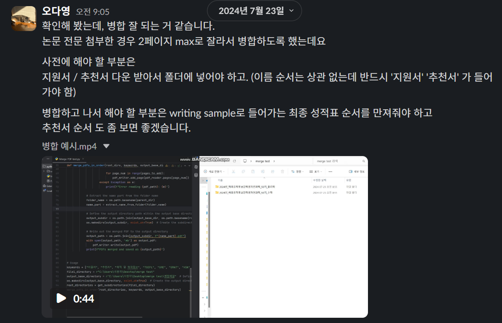
추천서나 어학 성적처럼 선택 제출 서류는 제출하지 않은 경우 해당 순서를 건너뜁니다. 다만, 코드상으로는 ‘미제출’과 ‘파일명 불일치로 서류를 찾지 못한 경우’를 구분하지 않기 때문에 두 경우 모두 별도의 오류 없이 제외됩니다. 따라서 파일명으로 식별된 서류 수와 실제 병합된 서류 수를 비교하는 검증 과정을 꼭 추가해야 합니다.
지금 돌이켜 생각해 보면, 제출한 1) 학·석·박 성적표가 제출 기준인 ‘최근 6개월 이내’에 해당하는지, 2) TOEFL/IELTS 성적표가 아직 유효한지, 3) 추천서가 실제 추천서인지(추천서 대신 논문을 제출하시는 분들도 종종 있습니다) 등을 확인하는 검증 과정까지 코딩으로 자동화했으면 좋았겠다는 생각이 듭니다.
파일 이름을 바꾸는 것도 Python으로 할 수 있습니다. os·pathlib은 Python에 처음부터 들어 있어 따로 설치할 것도 없습니다. 다만 저는 파일명 변경에는 거의 쓰지 않았습니다. 한 번 잘못 바꾸면 원래 이름을 되돌리기 어려워 일이 더 복잡해지기 때문입니다.
엑셀 나누기·합치기
1-1에 이어서 PDF 병합을 Python으로 처리하고 나니, 그다음부터는 엑셀도 당연히 Python으로 할 수 있을 거라 생각해 단 1초도 고민하지 않고 AI와 함께 코딩했습니다. 지원자별 서류를 만드는 작업을 마치고 나니, 다음 미션은 서류 평가를 위한 평가지를 만드는 일이었습니다. 지원자마다 정성·정량 평가를 작성할 수 있는 평가 시트를 만들고, 이를 평가자별로 배정된 지원자에 맞게 나누어 하나의 엑셀 파일로 묶어 전달해야 했습니다. 평가가 끝난 뒤에는 전체 결과를 비교할 수 있도록 각 평가자의 결과를 다시 하나의 엑셀 파일로 취합해야 했습니다.
지원자 한 명을 여러 명의 평가자가 평가하기 때문에 배포할 때는 평가자별로 엑셀 파일을 따로 만들어야 합니다. 그리고 각 지원자에 대해 정성·정량 평가를 작성할 수 있도록 지원자별로 시트를 나누었으며 시트 안에 해당 지원자의 정보를 함께 삽입하여 평가에 참고할 수 있도록 했습니다.
평가가 끝난 뒤에는 면접 대상자를 선정하기 위해 지원자의 평가 결과를 모두 한 시트에 모아 정렬해야 하므로, 전체 평가 결과를 한 장으로 취합해야 합니다. 즉, 지원자별 시트로 구성된 심사표를 평가자별로 나누어 배포하고 평가가 끝난 뒤 전체 결과를 다시 모아야 하는 작업입니다.
배포와 취합에 각각 시간이 듭니다. 손으로 처리한다면 심사 파일을 만들고 값을 옮기는 데 시간이 많이 소요됩니다.
심사표 한 장에 옮겨 적어야 하는 항목이 14개인데 값을 하나 잘못 옮기면 해당 지원자의 심사 결과가 달라지니 각별히 신경써야 합니다.
평가 결과를 자동으로 취합하려면 모든 심사표에서 정해진 평가 셀의 값만 읽을 수 있도록 구조를 동일하게 유지해야 합니다. 이를 위해 평가자가 다른 셀에 값을 입력하거나 형식을 변경하지 못하도록 데이터 유효성 검사와 시트 보호를 적용하고 심사에 사용하는 파일이므로 비밀번호 설정도 필요하다 생각했습니다. 이 설정을 손으로 처리하는 건 꽤 번거로운 일입니다.
지원자 명단과 정보가 저장된 엑셀 시트에서 시작합니다. 각 행(=지원자 1명)에 배정된 평가자를 병기하여, Python 코드로 평가자 수만큼 심사표를 자동으로 생성합니다. 심사표는 미리 만든 템플릿을 복사해 만들고, 데이터 유효성 검사, 조건부 서식, 시트 보호 설정까지 함께 복사합니다.
| 지원자 고유번호 | 이름 | 소속 대학 | 전공 | 평가자 1 | 평가자 2 | … |
|---|---|---|---|---|---|---|
| 12345 | 이몽룡 | XX대 | OO학과 | 변학도 | 성춘향 | … |
| 12346 | 김향단 | YY대 | △△학과 | 변학도 | 성춘향 | … |
추후 평가 결과를 취합할 것을 고려하여, 배포할 때 각 시트 하단 셀에 지원자와 평가자의 식별자1여러 대상 가운데 특정 하나를 구분하기 위한 고유한 값. 이름처럼 중복될 수 있는 값은 식별자로 적합하지 않습니다.를 삽입합니다. 보통 몇 백명대의 지원자가 있으면 동명이인이 복수로 있어 지원자는 고유번호를 삽입하거나 이메일을 씁니다. 평가자도 수 십명대였지만 다행이도 동명이인은 없었기에 저는 평가자의 이름을 식별자로 사용했습니다.
취합할 때는 이 두 식별자를 기준으로 값을 삽입할 위치를 찾습니다. 지원자의 고유번호로 해당 지원자의 행을 찾고, 평가자 이름으로 해당 평가자의 점수가 들어갈 열을 찾아 평가 결과가 해당 지원자의 행에 들어가도록 합니다.
파일을 만들 때 파일명은 평가자의 이름으로, 시트명은 지원자 이름으로도 함께 지정하지만 실제 취합 위치를 찾는 데는 사용하지 않습니다. 나중에 제가 결과를 확인할 때 어느 파일과 시트에서 온 값인지 추적하기 위한 정보로 활용합니다.
취합할 때는 폴더 안의 모든 심사표를 열어 시트마다 지정된 셀의 값을 읽고, 지원자 한 명의 평가를 한 행으로 만들어 다시 한 장에 쌓습니다.
| 처리 범위 | 이전 | 이후 |
|---|---|---|
| 심사표 배포 | 한 장에 3~4분(예측) | 명단 전체를 실행 한 번 |
| 평가 결과 취합 | 한 장에 2~3분(예측) | 폴더 전체를 실행 한 번 |
Python 코드 실행 한 번으로 배포와 취합을 몇 초 안에, 오류 없이 처리할 수 있습니다.
참고로, 같은 코드 구조를 면접 평가표에도 사용했습니다. 평가자별로 명단을 나누어 파일을 만들고, 평가가 끝난 뒤 다시 한 장으로 취합하는 방식은 같았습니다. 다만 식별자를 표현하는 방식이 달랐습니다. 서류 평가에서는 시트 안의 셀에 식별자를 삽입했다면 면접 평가에서는 파일명을 전공, 시트명을 평가자로 설정하고 전공·면접대상자·평가자 세 식별자를 조합해 결과가 들어갈 위치를 찾았습니다.
제 생각에--모든 데이터 처리 과정이 마찬가지겠지만--엑셀에서는 식별자와 셀 주소, 그리고 그 둘의 관계를 적절히 설계하고 활용하면 상당수의 반복작업을 자동화할 수 있습니다.
2024년 7월만 해도 Python으로 서식을 복사하거나 유지하는 데에는 한계가 있다고 느꼈는데 최근에는 이 정도의 대량 처리를 할 기회가 없어 지금은 어떤 수준까지 가능한지 잘 모르겠습니다. (해보신 분은 알려주시면 좋겠습니다!)
- 1
- 식별자(identifier) — 여러 대상 가운데 특정 하나를 구분하기 위한 고유한 값입니다. 이름처럼 중복될 수 있는 값은 식별자로 적합하지 않고, 지원자 고유번호처럼 한 대상에 하나씩 부여되는 값을 사용합니다. 이번 작업에서는 이 값을 이용해 평가 결과를 어느 지원자의 위치에 넣을지 찾습니다. ↩
개인별 맞춤 메일 발송
1-2에 이어서 지원자별로 서류를 병합하고 평가지를 만들었으니 평가자에게 자료를 전달해야 합니다. 수합한 평가 결과를 바탕으로 면접대상자가 선정되면, 면접대상자와 면접평가자에게 면접 일시와 장소를 전달해야 합니다. 이러한 교신 과정에서 메일 내용은 동일하지만 특정 필드1한 통마다 값이 달라지는 자리. 서식 파일에 열 이름을 적어 표시해 두면 코드가 명단에서 같은 이름의 열을 찾아 그 값으로 바꿉니다.만 교체해야 하는 경우, 개인별 맞춤 메일 발송 코드를 만들어 두면 좋습니다. 지금까지 개발한 코드 중 가장 애용한 코드입니다.
여러 사람에게 안내 메일을 보낼 때는 메일의 기본 내용은 동일하지만 이름·소속·일정·첨부파일 등 일부 정보는 사람마다 달라집니다.
따라서 공통된 안내문에 사람마다 다른 정보를 넣어 개인별 메일을 만들어야 합니다.
일반적인 메일 머지 기능으로 이러한 작업을 어느 정도 자동화할 수 있지만 서식과 첨부파일까지 개인별로 다르게 처리하는 데에는 한계가 있습니다. 서식이 복잡한 안내문은 굵게·색·링크 등의 형식이 유실될 수 있고 사람마다 다른 첨부파일을 지정하는 것도 어렵습니다.
결국 서식은 유지하면서 개인별 정보를 자동으로 넣고, 각자에게 필요한 첨부파일까지 함께 보내는 자동화가 필요했습니다.
만약 손으로 처리한다면 한 통당 2~3분(예측)이 소요되고 명단이 길어지면 하루를 넘길 수 있는 작업입니다.
워드로 작성한 서식 파일을 그대로 읽어 메일 본문으로 옮겨 서식(굵게, 색, 링크, 하이라이트 등)을 유지하고 명단의 값을 찾아 개인별 빈칸을 채웁니다. 또한 명단을 기준으로 수신자별 첨부파일을 자동으로 지정합니다.
필요한 경우 발송 기록을 위한 주소를 숨은참조(Bcc)에 자동으로 넣어, 수신자에게는 해당 주소가 보이지 않도록 할 수도 있습니다.
엑셀 명단은 첫 행에 열 이름을 적고 한 행에 한 사람을 둡니다. 열 이름이 필드 이름이 되어 워드 서식 파일의 필드와 연결됩니다. 첨부파일은 명단에 파일 이름만 기록하고 실제 파일은 정해진 폴더에 모아 둡니다.
워드 서식 파일은 평소처럼 작성하되, 사람마다 달라지는 자리에 {열 이름}을 넣습니다. 코드는 명단에서 해당 값을 찾아 자리를 채우고, 서식은 그대로 유지합니다.
| 명단의 1행 | 이름 | 일시 | 장소 | 첨부1 |
|---|---|---|---|---|
| 필드 | {이름} | {일시} | {장소} | 본문에는 넣지 않음 |
| 필드값 | 홍길동 | 3월 12일 14시 | 재단 2층 회의실 | 면접 안내문.pdf |
| 처리 범위 | 이전 | 이후 |
|---|---|---|
| 메일 한 통 | 2~3분(예측) | 사람 손이 들지 않음 |
| 명단 전체 | 하루를 넘길 수 있음(예측) | 실행 한 번 |
| 안내문 서식 | 한 통씩 붙여넣기 | 서식 파일 그대로 |
| 개인별 첨부 | 한 통씩 직접 붙이기 | 명단대로 자동 |
손으로 처리하던 때와 비교하면 제가 직접 해야 할 일은 명단과 서식 파일을 준비하는 것까지입니다. 이후에는 생성된 초안을 확인하고 발송하면 됩니다.
이 방식으로 제50기 선발 업무를 처리했지만 아직은 범용적인 도구라기보다 특정 업무에 맞춘 자동화 코드에 가깝습니다. 명단 파일과 첨부파일의 경로 · 첨부파일 개수 · 명단의 열 이름 등이 코드에 고정되어 있기 때문입니다. 따라서 명단의 형식이나 첨부파일 구성이 달라지면 코드를 직접 수정해야 합니다.
2026년 해외유학워크숍의 1:1 멘토링 멘토를 섭외하면서 개별 메일 발송 코드가 다시 필요했습니다. 그런데 매번 코드를 열어 필드명을 바꾸고, 명단과 본문 파일의 경로를 수정하는 일이 번거로워서 코드를 고쳐 쓰는 대신 프로그램을 만들었습니다.
명단과 본문 파일은 첨부 영역에 끌어다 놓으면 되고 열 이름은 명단의 첫 행을 읽어 자동으로 정하기 때문에 코드를 열지 않고 사용할 수 있습니다. 그리고 명단에 첨부1, 첨부2처럼 열을 추가하면 추가한 파일도 함께 첨부됩니다. 첨부는 두 가지 방식으로 지정할 수 있습니다. 파일 이름만 적고 첨부 폴더 경로를 따로 지정하거나 명단에 전체 경로를 적어 폴더 지정 없이 쓸 수도 있습니다.
보내기 전에는 미리보기에서 이메일 형식 오류, 중복, 첨부 누락, 채워지지 않은 항목, 용량 초과를 표로 먼저 확인하고 초안으로 열기를 통해 실제 발송될 메일을 미리 확인합니다. 초안으로 여는 것은 발송이 아니므로, 이 단계에서는 메일이 실제로 발송되지 않습니다.
앞서 말한 발송 제한 때문에 프로그램에 제동을 걸어 두었습니다. 발송 간격은 3초이고 그보다 짧게는 설정할 수 없습니다. 한 묶음에 100건까지 보낼 수 있고 마지막 발송으로부터 15분이 지나면 다시 100건을 보낼 수 있습니다.
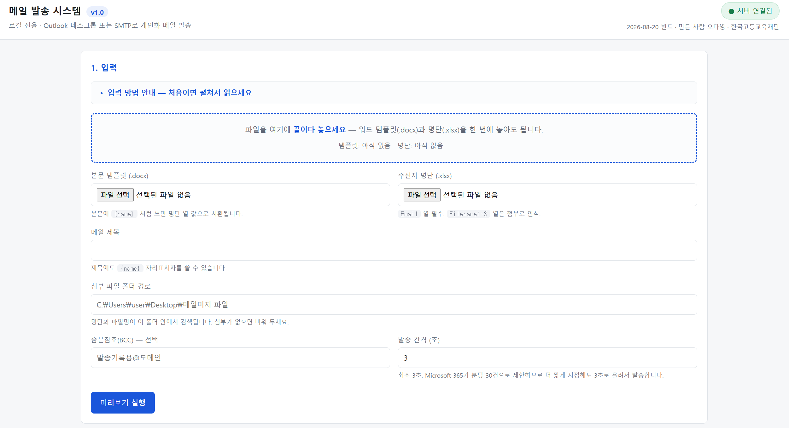
실행 파일(.exe) 하나로 만들어 두었기 때문에 Python이 설치되지 않은 컴퓨터에서도 해당 파일만 있으면 사용할 수 있습니다.
| 개인별 맞춤 메일 발송 | 2024 스크립트 | 2026 웹앱 |
|---|---|---|
| 명단 · 첨부 경로 | 코드에 적음 | 화면에 끌어다 놓기 |
| 첨부 개수 | 3개 고정 | 열을 추가하는 만큼 |
| 명단 열 이름 | 코드에 적음 | 첫 행을 자동으로 읽음 |
- 1
- 필드 — 서식에서 개별 데이터로 바뀌는 자리입니다. 이름처럼 명단의 열 이름을 표시해 두면, 코드가 해당 열의 값을 가져와 메일마다 다른 내용으로 바꿉니다. 이름·일시·장소처럼 수신자마다 달라지는 정보는 필드로 지정하고 나머지 문장은 동일하게 발송합니다. ↩
웹 조작(스크래핑)
웹 스크래핑을 실제 업무에 적용해 본 첫 계기는 재단 예산 집행 현황을 파악하는 일이었습니다. (실장님께서 지출·수입 데이터를 Google Spreadsheet로 가져오는 작업을 의뢰하셨습니다.) 재단은 현재 아마란스를 사용하고 있지만 그 전 다우오피스를 사용하던 당시에는 예산이 얼마나 집행되었는지 확인할 수 있는 집계 시스템이 없었습니다. 필요한 데이터를 직접 손으로 복사하는 대신, 웹에서 자동으로 데이터를 가져와 재단 구성원이 모두 열람할 수 있도록 Google Spreadsheet에 업로드하는 방법을 시도했습니다.
예산 집행 현황을 파악하려면 항·목별로 예산이 얼마나 집행되었는지를 한눈에 확인할 수 있어야 합니다.
하지만 다우오피스에는 이러한 형태로 전체 집행 현황을 모아 볼 수 있는 화면이 없어, 전표를 하나씩 열어 필요한 데이터를 별도의 표로 옮겨 집계해야 했습니다.
전표 한 건에서 옮겨야 할 값은 문서번호·지출/입금·발의일자·집행부서·제목·프로그램·항·목·보조과목·금액 등 10개 항목이었습니다.
한 전표에 여러 예산 항목이 포함되는 경우도 있어, 가져온 데이터를 예산 집계에 맞게 다시 정리하는 작업도 필요했습니다.
손으로 처리하면 한 건당 1~2분(예측)이 걸리고, 전표가 새로 생길 때마다 같은 작업을 반복해야 합니다.
따라서 집계표를 한 번 만들어 놓는 것으로 끝나지 않습니다. 새로운 전표가 생길 때마다 데이터를 추가로 옮겨야 하므로, 최신 집행 현황을 유지하는 데에도 계속 사람의 작업이 필요합니다.
웹에서 데이터를 가져오려면 어떤 데이터를 어디에서 가져올지 정하고 가져온 데이터를 어디에 쌓을지도 정해야 합니다.
요소 지정
코드는 화면을 보고 필요한 값을 판단할 수 없기 때문에 버튼·입력창·표의 어느 위치를 조작하거나 읽을지 지정해 주어야 합니다. 브라우저에서 오른쪽 클릭 → 검사를 누르면 요소1웹 화면을 이루는 조각 하나. 입력칸·버튼·표의 한 칸이 각각 요소이며 저마다 고유한 값을 가지고 있습니다.의 id, 텍스트, XPath 등을 확인할 수 있습니다.
| 지정 방식 | 값 | 특성 |
|---|---|---|
| ID | username | 화면이 부여한 고유값이라 비교적 안정적입니다 |
| 텍스트 | 2025 지출전표 | 문구가 유지되면 화면 구조가 바뀌어도 사용할 수 있습니다 |
| XPath | //tr[12]/td[1] | 행이 하나만 추가되어도 위치가 달라질 수 있습니다 |
로그인 칸은 고유한 ID가 있어 이를 사용했고, 전표 표는 별도의 이름이 없어 표에서의 위치를 나타내는 XPath를 사용했습니다. 따라서 전표가 추가되거나 화면 구조가 바뀌면 XPath가 가리키는 위치도 달라질 수 있습니다.
Google Sheets 연결
전표를 읽은 뒤에는 Google Sheets에 데이터를 쌓도록 연결했습니다.
Google Sheets도 웹 화면이지만 이 부분은 화면을 조작하지 않습니다. 구글이 프로그램끼리 값을 주고받는 창구(API2프로그램끼리 값을 주고받도록 서비스가 미리 열어 둔 창구. 사람이 쓰는 화면을 거치지 않고 코드가 직접 요청을 보내고 결과를 받습니다.)를 열어 두었기 때문에 브라우저를 띄우지 않고 값을 바로 넣습니다.
사람 계정으로 로그인하는 대신 서비스 계정을 하나 만들고 그 계정에 시트를 공유했습니다. 코드는 구글에서 내려받은 키 파일로 신분을 증명하며 스프레드시트와 드라이브까지만 권한을 받습니다.
credentials = Credentials.from_service_account_file("service-account.json", scopes=SCOPES)
client = gspread.authorize(credentials)
sheet = client.open_by_url("https://docs.google.com/spreadsheets/…").sheet1
sheet.append_row(data)앞의 세 줄로 시트에 연결하고 마지막 한 줄이 값을 시트 맨 아래에 한 행으로 붙입니다.
시트에 머리글이 없으면 먼저 만들고, 전표에서 읽은 값을 정해진 열에 맞춰 기록합니다. 그리고 문서번호를 식별자로 사용하여 이미 수집한 전표는 건너뜁니다.
전표 하나에 여러 예산 항목이 포함된 경우에는, 문서번호부터 프로그램까지의 정보는 그대로 두고 항·목·보조과목·금액만 바꾸어 추가로 기록합니다.
전표가 새로 올라오면 코드를 다시 실행하면 됩니다. 그동안 늘어난 전표만 알아서 찾아 시트 아래에 붙습니다.
| 처리 범위 | 이전 | 이후 |
|---|---|---|
| 전표 한 건 | 1~2분(예측) | 6~8초 |
| 어디까지 옮겼나 | 담당자가 비교하여 확인 | 문서번호로 판별 |
| 보는 사람 | 코드를 실행하는 담당자 | 재단 전체 |
Google Sheets와 연동하여 수집한 내역을 개인 PC가 아닌 공유 문서에 축적합니다. 따라서 재단 구성원 누구나 예산 집행 현황을 확인할 수 있습니다.
이 코드는 2024년 12월에 만들어 2025년 12월까지 약 1년간 사용했습니다. 지금은 결재 시스템이 아마란스로 바뀌어 사용하지 않습니다.
대기 처리
웹 페이지는 화면을 여는 즉시 모든 내용이 준비되지 않을 수 있습니다. 따라서 코드가 다음 동작으로 넘어가기 전에 필요한 화면이나 단추가 준비될 때까지 기다려야 합니다. 두 가지 방법을 함께 사용했습니다.
time.sleep(2)정해진 시간만큼 기다리는 방법입니다. 화면이 2초보다 늦게 준비되면 문제가 생기고, 일찍 준비되어도 2초를 모두 기다립니다.
WebDriverWait(driver, 10).until(
EC.element_to_be_clickable((By.XPATH, "//*[@id='last_page']"))
)필요한 단추를 실제로 누를 수 있을 때까지 기다리는 방법입니다. 준비되면 바로 다음 단계로 넘어가고, 10초가 지나도 준비되지 않으면 멈춥니다.
특히 대기 시간이 짧다고 해서 항상 바로 오류가 나는 것은 아닙니다. 화면이 준비되기 전에 값을 읽으면 빈 값이 들어가고, 코드가 이를 오류로 판단하지 않은 채 다음 전표로 넘어갈 수도 있습니다. 그래서 이 부분의 오류는 결과를 확인하기 전까지 알아채기 어려웠습니다.
화면이 준비되는 데 걸리는 시간은 그때그때 달라서 어제 실행되던 코드가 오늘 멈추거나 제 컴퓨터에서는 되던 코드가 다른 컴퓨터에서는 작동하지 않는 일이 생깁니다. 사람이라면 화면이 뜰 때까지 기다리면 될 일이지만 코드에게는 기다리는 것조차 명령해야 한다는 점이 흥미로웠습니다. 웹을 조작하는 코드에서 오류가 많이 난 부분도 대기 처리였습니다.
이 코드는 Selenium으로 만들었지만 요즘 웹 조작에는 Playwright도 많이 사용됩니다. Selenium은 자료와 생태계가 넓다는 장점이 있고 Playwright는 요소가 준비될 때까지 자동으로 기다리는 기능과 최신 웹 앱에 대한 지원이 강하다는 장점이 있습니다. 그래서 위에 적은 대기 처리를 직접 작성해야 하는 일이 크게 줄어듭니다.
계정과 주소
이 코드는 실장님께 전달해 직접 실행할 수 있도록 만든 프로그램입니다. 실행하면 결재 시스템에 접속해 전체 전표 내용을 가져오기 때문에 실장님의 결재 계정과 시트 주소가 필요합니다. 당시에는 제가 사용하는 환경을 기준으로 필요한 값을 코드에 직접 기입했지만 다른 사람이 사용할 프로그램이라면 계정 정보와 같은 값은 코드에 넣지 않고 환경변수3값을 코드 안에 적지 않고 컴퓨터에 따로 저장해 두었다가 프로그램이 실행될 때 읽어 오게 하는 방법입니다.로 분리하는 편이 안전하다고 합니다.
Google Sheets에 접속하려면 서비스 계정 키(JSON4데이터를 이름과 값의 짝으로 표현하는 파일 형식입니다. 사람이 읽을 수 있는 텍스트이면서 프로그램에서도 쉽게 읽을 수 있습니다.)이 필요합니다. 이 파일에는 제 계정의 권한이 담겨 있어 전달하지 않고 직접 내려받아 쓰시도록 안내했습니다.
- 1
- 요소(element) — 웹 화면을 이루는 하나의 조각입니다. 입력칸·버튼·표의 한 칸 등이 각각 하나의 요소입니다. 코드는 화면을 직접 볼 수 없기 때문에 id·텍스트·XPath 등의 정보를 이용해 어떤 요소를 조작할지 찾아갑니다.↩
- 2
- API — 프로그램이 다른 서비스와 데이터를 주고받을 수 있도록 서비스가 제공하는 통신 창구입니다. 사람이 화면에서 직접 조작하지 않아도 코드가 API를 통해 데이터를 요청하고 결과를 받을 수 있습니다. Google Sheets처럼 API를 제공하는 서비스는 브라우저를 띄우지 않고도 코드로 데이터를 읽고 쓸 수 있습니다. ↩
- 3
- 환경변수 — 값을 코드 안에 적지 않고 컴퓨터에 따로 저장해 두었다가 프로그램이 실행될 때 읽어 오게 하는 방법입니다. 아이디·비밀번호처럼 공개하면 안 되는 값이나 사람마다 달라지는 파일 경로 등을 코드와 분리해 관리할 때 사용합니다. 코드를 그대로 전달해도 환경변수에 저장된 값은 함께 전달되지 않습니다. ↩
- 4
- JSON — 데이터를 이름과 값의 짝으로 표현하는 파일 형식입니다. 사람이 읽을 수 있는 텍스트이면서 프로그램에서도 쉽게 읽을 수 있어 설정값이나 데이터 전달에 널리 사용됩니다. 다만 JSON 파일에 비밀번호나 인증 정보를 저장한다고 해서 자동으로 안전해지는 것은 아닙니다. 민감한 정보는 접근 권한과 보관 방식까지 함께 관리해야 합니다. ↩
자료 업로드 · 다운로드
참고웹 조작은 화면에서 값을 읽는 데만 쓰는 것이 아니라 자료를 올리고(업로드) 내려받는 데(다운로드)에도 쓸 수 있습니다.
가령, 해외유학후보장학생 선발에서는 지원자의 지원서를 PDF로 내려받거나(PDF 인쇄), 평가위원 명단 엑셀 파일을 읽어 평가위원 계정을 등록하고 지원자 자료를 업로드하는 과정이 필요합니다.
2024년에는 시간이 없었기 때문에 코드를 만들지 않았고 2025년에 제51기 선발을 하며 시도해 보았었는데 만족스러운 결과를 얻지는 못했습니다. 업로드는 파일 첨부 단계에서 코드가 작동하지 않았고 다운로드는 실행은 되었지만 페이지 이동(navigation) 등이 완벽하게 동작하지 않았습니다.
당시에는 AI가 디버깅 과정에서 문제를 잘 해결하지 못해 코드가 점점 '무거워진다'는 느낌을 받을 때가 자주 있었습니다.
그래도 당시 바이브 코딩을 하는 제 개발 원칙은 “일단 실행되어 목적을 달성하면 된다”였기 때문에 완벽하게 만드는 것보다는 실제 업무를 수행하는 데 초점을 두었습니다. (비유하자면, 못을 박는 것이 목적이라면 망치가 가장 좋은 도구겠지만 책이든 구두든 못만 박을 수 있다면 일단 상관없다는 느낌입니다.) 사무 자동화 코드는 다른 사람에게 보여주기 위한 것이 아니라 반복되는 일을 대신하기 위한 도구이기 때문입니다.
2026년 해외유학워크숍에서 다시 업로드 코드가 필요해 Claude와 함께 만들어 보았는데 이번에는 문제가 금방 해결되었습니다. 같은 작업을 다시 시도하면서 2년 사이 AI를 활용한 코딩이 상당히 발전했다는 것을 체감한 순간이었습니다.
개인정보 마스킹
1-4에 이어서 2025년 초부터 재단은 50주년을 맞아 새로운 비전과 미션을 고민하기 시작했고, 오랜 기간 이어져 온 해외유학 장학 사업도 다시 검토하게 되었습니다. 그 결과 2025년을 마지막으로 해외유학후보장학생 선발을 종료하게 되었습니다.
2025년에는 2024년에 개발한 코드를 거의 그대로 사용했고(해봤자 틈틈이 오류 수정 정도였습니다), 새로 Python으로 코딩한 부분은 없었습니다.
2026년에 들어서면서 저는 장학학술팀에서 사업추진2팀으로 팀이 변경되었고 새로운 사업을 담당하게 되었습니다. 새로운 사업을 고민하면서 선발 Agent나 해외유학 컨설팅 Agent가 있으면 좋겠다는 생각이 들어 직접 만들어 보고 싶었습니다. 그런데 AI에 자료를 넣어 분석을 맡기려 하니, 제가 다루는 문건 대부분에 개인정보가 포함되어 있어 원문을 그대로 사용할 수 없었습니다. 그래서 Python으로 개인정보를 자동으로 마스킹하는 도구를 먼저 만들어 보았습니다.
개인정보가 담긴 문서를 외부에 전달하거나 AI에 분석을 맡길 때는 개인정보를 어떻게 처리할지 먼저 정해야 합니다.
자료는 실명으로 접수되지만 이름·연락처·소속 등이 문서 곳곳에 섞여 있어 사용할 때마다 개인정보를 찾아 가려야 합니다. 같은 이름이 여러 번 등장하는 경우도 있어 손으로 처리하면 누락될 가능성이 높습니다.
반대로 모든 이름을 [성명]처럼 동일하게 바꾸면 문서 안에서 인물을 구분할 수 없게 됩니다. 선발 자료를 AI에 분석시킬 때 지원자와 추천인의 경력이 서로 다른 사람의 정보라는 맥락까지 사라질 수 있습니다.
따라서 개인정보는 가리면서도 문서의 맥락과 인물 간 구분은 유지하는 방식이 필요합니다. 가리는 범위를 넓힐수록 개인정보 보호에는 유리하지만 문서의 활용도는 떨어지기 때문에 보호 수준과 활용도 사이에서 적절한 수준을 선택해야 합니다.
마스킹에서 정할 것은 두 가지입니다. 마스킹 방식은 가린 자리를 무엇으로 바꿀지 정하고 마스킹 강도는 어떤 개인정보까지 가릴지를 정합니다. 두 설정은 서로 독립적으로 선택합니다.
마스킹 방식
찾아낸 개인정보를 그대로 두지 않고 [성명] 같은 표시로 바꿉니다. 가린 자리에 어떤 표시를 넣을지는 세 가지 방식 중에서 고릅니다.
| 방식 | 결과 | 용도 |
|---|---|---|
| 가명 | [성명1] · [휴대전화2] | AI 분석용. 같은 값에는 같은 번호를 부여해 인물 구분 |
| 삭제 | [성명] · [휴대전화] | 외부 공유용. 개인정보를 다시 알아낼 가능성을 가장 낮춤 |
| 부분 | 홍** · 010-****-5678 | 사람이 눈으로 대조·검수할 때 |
기본값은 번호를 붙여 가리는 방식입니다. 홍길동이라는 이름이 문서에 열 번 나오면 모두 [성명1]로 바뀝니다. 이름 자체는 보이지 않지만 문서 안에서 같은 사람이라는 구분은 유지됩니다.
여러 파일을 함께 처리할 때도 같은 번호 체계를 사용합니다. 따라서 다른 파일에 같은 사람의 정보가 나오면 같은 번호가 부여됩니다.
마스킹 강도
가리는 범위를 단계로 선택합니다. 강도를 높일수록 더 많은 개인정보가 가려집니다.
| 강도 | 가리는 것 | 쓰는 곳 |
|---|---|---|
| 1 · 기본 보호 | 고유식별정보 · 연락처 | 내부 검토. 문서 원형을 최대한 남김 |
| 2 · 표준 | 이름 · 주소 · 소속 · 민감정보까지 | AI 입력 · 외부 공유 |
| 3 · 최대 | 라벨이 붙은 칸의 모르는 번호까지 | 재식별 위험 최소화 |
| 4 · 숫자 전면 삭제 | 남은 숫자를 전부 | 정성 분석 전용 |
기본값은 2단계입니다. 2단계에서는 소속도 가리지만 옆의 소속·학교·전공 항목을 남기기로 선택하면 해당 정보는 가리지 않습니다. 즉, 개별 설정을 먼저 적용하고 나머지 항목에는 선택한 강도를 적용합니다.
4단계는 남아 있는 숫자를 모두 지우기 때문에 연도와 나이 같은 정보도 함께 사라집니다. 개인정보를 더 강하게 가리는 대신 문서의 활용도는 그만큼 떨어집니다.
선택 항목
장애·병역·건강·종교 등은 별도로 가릴 항목으로 선택할 수 있습니다. 특히 건강·종교 등에 관한 정보는 「개인정보 보호법」에서 정한 민감정보에 해당할 수 있으므로, 일반적인 개인정보와 구분해 처리합니다.
블라인드 심사라면 가리고, 평가 요소로 활용할 때는 남깁니다.
여·대한민국처럼 값만으로는 가릴 필요가 없는 내용도, 성별·국적 같은 항목 이름과 함께 나타날 때는 개인정보로 인식해 가리도록 조건을 둡니다.
항목 이름이 붙은 개인정보만 찾을지, 본문에 자연스럽게 등장하는 이름까지 찾을지 고릅니다. 이름의 성씨만으로 찾으면 인재육성·이용처럼 사람 이름이 아닌 단어도 이름으로 잘못 인식할 수 있습니다. 이를 줄이기 위해 문장의 구조를 분석해 사람 이름으로 보이는 단어를 먼저 찾고, 성씨인지 한 번 더 확인합니다.
원본 파일명에 이름이 들어 있는 경우가 있어, 파일명도 함께 익명화할 수 있습니다.
A형 간염·등록금 면제·21세기처럼 개인정보가 아닌 표현을 잘못 가리는 일이 없는지, 시험용 문서를 만들어 자동으로 확인합니다.
자동으로 가릴 수 있는 것은 형태가 일정한 개인정보입니다. 이름과 연락처처럼 정해진 형태의 정보는 찾아낼 수 있지만 서술형 문장에 포함된 개인정보까지 모두 찾아내기는 어렵습니다. 예를 들어 이름이 없어도 학위 과정·전공 분야·연도 등의 정보가 함께 적혀 있다면 특정인을 추정할 수 있습니다. 그래서 자동 마스킹 결과는 내보내기 전에 반드시 사람이 한 번 검수해야 합니다.
결과 파일의 맨 앞에 원본 파일에서 계산한 고유한 값과 항목별 마스킹 건수를 기록합니다. 원본 파일의 내용이 같으면 같은 값이 나오고, 내용이 달라지면 값도 달라집니다. 따라서 나중에 원본과 사본을 대조해 "이 사본이 어떤 원본에서 만들어졌는지"와 "무엇을 몇 건 가렸는지"를 확인할 수 있습니다.
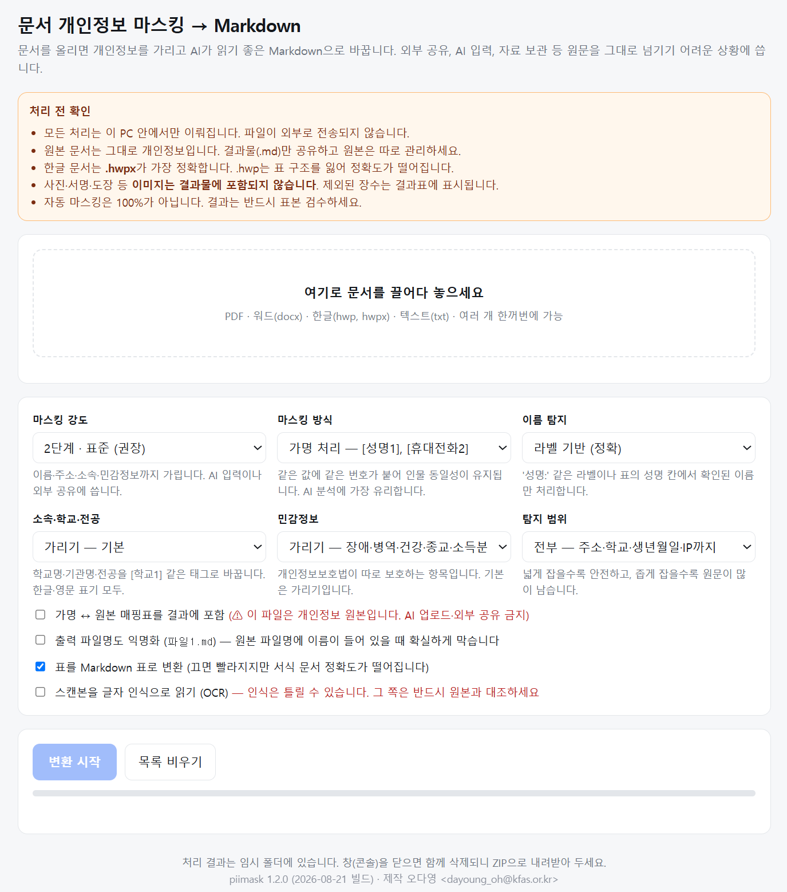
Markdown으로 내보내기
AI에 문서를 넣어 분석할 수 있도록 원본 문서를 .md 파일로 변환해 저장하도록 만들었습니다. PDF·워드·한글·텍스트 파일을 받아도 같은 형태로 내보냅니다.
한글 문서는 .hwp보다 .hwpx 형식으로 저장해 넣는 것이 좋습니다. 표의 구조를 더 잘 읽을 수 있어 마스킹 정확도가 높아집니다.
Markdown은 제목·목록·표 등의 구조를 간단한 기호로 표시하는 텍스트 기반 문서 형식입니다. 원본의 글꼴·색 같은 서식은 버리는 대신 문서의 구조와 내용은 유지해 AI가 읽고 처리하기 쉽게 만듭니다.
사본 맨 위에는 개인정보를 자동 마스킹한 사본이라는 안내를 붙입니다.
결과는 임시 폴더에 만들어집니다. 창을 닫으면 함께 지워지기 때문에 필요한 파일은 ZIP으로 내려받아 보관해야 합니다.
스캔한 문서는 기본적으로 읽지 않습니다. 글자가 이미지로 저장되어 있으면 내용을 정확하게 읽을 수 없기 때문에 지금은 사람 확인 필요로 표시하고 넘어갑니다.
윈도우의 글자 인식 기능(OCR)을 연결하면 읽을 수 있어 선택 기능으로 넣어 두었지만 기본값으로 켜지는 않도록 했습니다. 인식률이 93~96% 정도라 「홍길동」을 「홍길둥」으로 잘못 읽으면 이름을 찾는 규칙에도, 명단과 대조하는 과정에도 걸리지 않습니다. 겉으로는 개인정보가 모두 가려진 것처럼 보여도 실제 개인정보가 남을 수 있습니다. 읽지 못한 경우에는 경고를 띄워 사람이 확인할 수 있지만 OCR을 자동으로 적용하면 이런 경고가 사라질 수 있기 때문입니다.
마스킹했다고 해서 외부 AI에 바로 올려도 되는 것은 아닙니다. 마스킹 여부와 AI 활용 가능 여부는 별개의 판단입니다. 자료를 받을 때 안내한 수집·이용 목적에 해당 분석이 포함되는지 먼저 확인해야 합니다.
마지막으로 어떤 정보를 가릴지는 사람이 판단합니다. 특히 민감정보가 선발 기준과 연결되어 있다면 무엇을 남기고 무엇을 가릴지는 코드가 일률적으로 결정할 수 없는 영역이기 때문입니다.
Apps Script로 업무 자동화
Apps Script1Google 문서·시트·캘린더·드라이브 등을 다루는 코드를 Google 계정으로 작성하고 Google 서버에서 실행하는 자동화 도구.는 Google 문서·시트·캘린더·드라이브 등을 다루는 코드를 Google 계정으로 작성하고 Google 서버에서 실행하는 자동화 도구입니다. 별도의 프로그램을 설치하지 않아도 브라우저에서 바로 시작할 수 있기 때문에 Google 도구를 중심으로 이루어지는 반복 작업에 유용합니다. 후기와 영수증을 수합하여 실비를 지급하는 업무처럼 증빙 문서를 만들어야 할 때 Google Apps Script(GAS)를 종종 사용합니다.
Apps Script의 장점
제가 쓰면서 느낀 장점은 네 가지입니다.
설치할 것이 없습니다. Google 계정에 로그인하면 브라우저에서 편집기를 바로 열어 코드를 작성할 수 있습니다. 1장에서는 Python과 편집기를 설치하고 프로젝트마다 필요한 패키지를 준비해야 했지만 Apps Script는 그런 준비 과정이 없습니다.
코드는 Google 서버에서 실행되기 때문에 정해진 시간에 자동으로 실행하도록 설정해 두면 실행하는 동안 컴퓨터를 켜 둘 필요도 없습니다.
사람이 실행 단추를 누르지 않아도 정해 둔 조건이 되면 코드가 자동으로 실행됩니다. 이 조건을 트리거2코드를 언제 자동으로 실행할지 정해 두는 기능. 조건이 충족되면 사람이 실행하지 않아도 Apps Script가 코드를 실행합니다.라고 합니다.
| 트리거 | 실행 시점 | 쓴 곳 |
|---|---|---|
| 양식 제출 시 | 폼이 제출된 뒤 | 해외유학 대면모임 지원(2-1) |
| 시간 기반 | 매달 3일처럼 정해 둔 시각 | 법인카드 영수증 정리(2-2) |
1장의 Python 코드는 컴퓨터를 켜서 실행하지 않으면 아무 일도 일어나지 않습니다(그러나 Power Automate 같은 서비스를 연동하면 자동화 할 수는 있습니다.) 반면 GAS를 활용하여 트리거를 설정해 두면 밤이나 휴일에 신청이 들어와도 정해 둔 작업이 자동으로 실행됩니다.
Google 도구를 바로 연결할 수 있습니다. Form·Sheets·Docs·Calendar·Drive 등을 Google 계정의 권한으로 조작할 수 있습니다. 처음 실행할 때 Google이 필요한 권한을 묻고, 승인하면 해당 계정이 접근할 수 있는 문서와 일정 등을 코드에서 다룰 수 있습니다.
1장에서 Python으로 Google Sheets에 값을 넣을 때는 서비스 계정 키 파일을 따로 만들어 코드에 연결해야 했습니다(1-4). Apps Script는 Google 서비스와 같은 환경에서 실행되기 때문에 이러한 연결 과정이 훨씬 간단합니다.
문서도 자동으로 만들 수 있습니다. 서식 문서를 미리 만들어 두고 값이 들어갈 자리(필드; field)를 표시해 두면, 코드가 사본을 만들어 해당 자리를 필드 값으로 채울 수 있습니다.
예를 들어 신청자가 Google Form을 제출하면 응답 내용을 바탕으로 지출결의에 첨부할 문서나 증빙 자료를 자동으로 만들도록 구성할 수 있습니다. 사람이 응답 내용을 다시 문서에 옮겨 적는 작업을 줄일 수 있습니다.
Python과의 차이
| 구분 | 1장 · Python | 2장 · Apps Script |
|---|---|---|
| 실행 시점 | 내가 직접 실행 | 폼 제출·정해진 시각에 자동 실행 |
| 컴퓨터가 꺼져 있을 때 | 실행할 수 없음 | Google 서버에서 실행 |
| 설치 | Python·편집기·패키지 준비 | 별도 설치 없음 |
| 주로 연결하는 곳 | 파일·웹·다양한 프로그램 | Google Form·Sheets·Docs·Calendar·Drive |
시작 준비
설치할 것은 없고 Google 계정과 브라우저만 있으면 시작할 수 있습니다.
① Apps Script 편집기에서 코드를 작성하고 ② 필요하면 트리거를 설정합니다. 폼으로 신청을 받는 경우에만 Google Form을 함께 만듭니다.
처음 실행할 때는 Google이 필요한 권한을 묻습니다. 승인하면 해당 계정의 권한으로 Google 캘린더·문서·시트 등을 조작합니다.
해외유학 대면모임 지원
1-5에 이어서 해외유학장학 프로그램은 더 이상 새로운 장학생을 선발하지 않게 되었지만 기존에 재학 중인 해외유학장학생에 대한 지원과 장학금 송금은 계속해야 했습니다. 장학학술팀에서 사업추진2팀으로 옮기면서 기존 해외유학장학생 지원 업무도 제가 이어가게 되었습니다. 그리고 저는 항상 해외유학 장학생 네트워킹 지원이 아쉽다는 생각이 있었어서 2025년 말부터 2026년 초 사이에 해외유학장학생 대면모임 지원 사업을 새롭게 추진하게 되었습니다. 전 세계에 흩어져 있는 장학생들이 각지에서 네 명 이상 모이면 1인당 최대 50 USD를 실비로 환급하는 사업으로, 상·하반기 각 한 번씩 지원합니다.
처음 사업을 설계하면서 신청부터 정산까지의 과정을 어떻게 연결할지 생각했습니다. 특히 신청서와 후기, 영수증을 받은 뒤 정산 문서를 사람이 다시 작성하는 과정이 반복될 것으로 보여, Google 도구를 연결할 수 있는 Apps Script로 전체 흐름을 자동화해 보기로 했습니다.
대면모임 지원은 크게 신청·후기·정산 세 단계로 이루어집니다. 신청은 모임을 열기 전에, 후기는 모임이 끝난 뒤에 받으며 두 과정 모두 Google Form을 사용합니다.
후기는 Word 파일로 받아도 되지만 작성자가 각자 파일을 만들어 제출하면 글꼴·사진 크기·문서 구성 등이 달라질 수 있습니다. 정해진 양식을 사용하게 하려면 먼저 서식 파일을 내려받아 작성한 뒤 다시 제출해야 하므로 참여자에게도 번거롭습니다. 그래서 후기는 링크만 있으면 바로 작성할 수 있는 Google Form으로 받되, 제출된 내용은 같은 형식의 문서로 정리하는 방식을 택했습니다.
모임이 끝난 뒤에는 참석자는 후기를 제출하고 모임장은 후기와 함께 정산에 필요한 자료를 제출합니다. 후기에는 사진이 여러 장 첨부되고 정산에는 영수증이 첨부되는데 사진의 크기와 파일 형식이 제각각이라 이를 그대로 문서에 넣으면 결과물의 형식이 일정하지 않습니다. 일부 휴대전화 사진은 파일 형식 때문에 문서에 바로 삽입되지 않는 경우도 있습니다.
정리해 보자면, 신청 → 내부 일정 관리 → 공개 모임 등록 → 후기·정산 자료 수합 → 문서 작성으로 이어지는 작업입니다.
① 신청과 캘린더 등록
신청 폼이 제출되면 코드가 응답을 읽어 사업추진2팀 캘린더에 일정을 등록합니다. 모임 일시는 날짜 질문으로 받기 때문에 코드가 그대로 일정 시각으로 옮깁니다. 팀에서 어떤 모임이 언제 열리는지 확인하기 위해서입니다.
② 승인과 공유 캘린더 복사
등록된 일정을 보고 제가 지원 여부를 확정한 뒤 신청자에게 이메일로 알립니다. 승인한 모임 가운데 공개 모집으로 신청한 것만 해외유학장학생 공유 캘린더에 복사합니다. 다른 장학생은 이 캘린더를 보고 참여할 모임을 찾습니다.
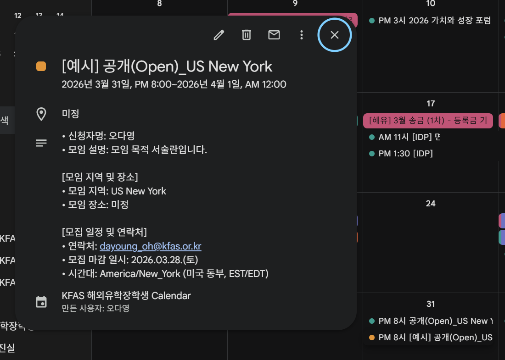
③ 후기 제출과 문서 생성
모임이 끝나면 참석자 전원이 후기 폼을 제출합니다. 폼에서 모임원과 모임장을 고르게 하고 모임장은 환급 계좌 정보와 영수증 사진을 제출합니다. 제출과 동시에 코드가 그 내용을 문서로 만듭니다.
| 제출 | 자동 생성 |
|---|---|
| 모임원 | 후기 문서 1개 |
| 모임장 | 후기 문서 + 영수증이 붙은 환급 계좌 문서 |
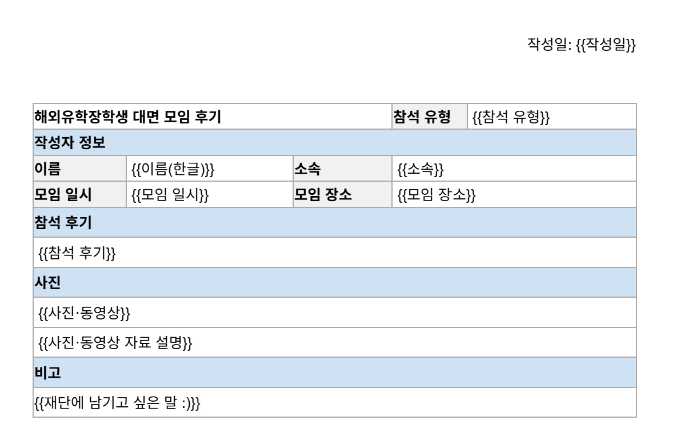
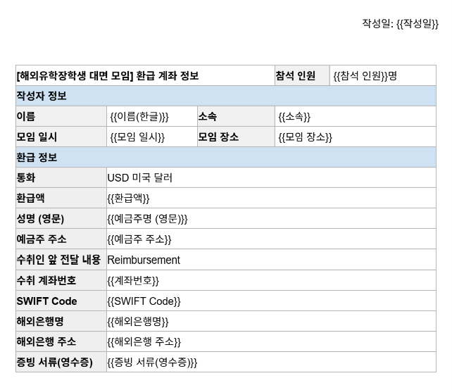
첨부된 사진은 코드가 정해 둔 크기에 맞춰 자동으로 넣습니다. 일반 사진은 높이 10cm, 영수증은 글씨를 읽어야 하므로 20cm로 맞춥니다. 문서에 바로 넣을 수 없는 사진 형식도 자동으로 변환한 뒤 삽입합니다.
폼 두 장에 스크립트 세 개가 붙었습니다. 특히 후기 폼은 같은 폼을 사용해도 제출자의 역할에 따라 서로 다른 산출물을 만듭니다.
| 제출 | 자동 생성 |
|---|---|
| 신청 폼 | 팀 캘린더 일정 1건 |
| 후기 폼 — 모임원 | 후기 문서 1개 |
| 후기 폼 — 모임장 | 후기 문서 + 환급 계좌·영수증 문서 |
| 처리 범위 | 이전 | 이후 |
|---|---|---|
| 신청 한 건 옮기기 | 손으로 옮김 | 자동 등록 |
| 팀 캘린더에 올라가기까지 | 내가 옮길 때까지 | 제출과 동시에 |
| 후기 문서 한 건 | 손으로 작성 | 제출과 동시에 |
| 계좌 정보 옮겨 적기 | 손으로 | 없어짐 |
사람이 폼과 문서 사이에서 값을 옮겨 적는 단계가 사라지면서 제가 하던 일도 값을 옮겨 적는 일에서 폼의 문구와 흐름을 관리하는 일로 바뀌었습니다.
폼은 Apps Script로도 만들 수 있습니다. AI에 필요한 내용을 설명하고 Google Form 생성 코드를 요청하면 코드와 함께 Apps Script 편집기로 바로 들어갈 수 있는 링크도 받을 수 있습니다.
법인카드 영수증 정리
참고법인카드 영수증 정리가 귀찮아서 언젠가는 자동화해야겠다고 생각했지만 자동화하는 것 자체도 귀찮아서(…^^) 계속 미루던 작업이었습니다. 그런데 요즘 AI 코딩이 워낙 잘 되다 보니, 이번에 Apps Script로 금방 만들어 보았습니다. Google Drive에 영수증 파일을 넣어 두면 Apps Script가 영수증의 날짜, 사용처, 금액 등을 읽어 파일명을 바꾸고, 월별 폴더로 정리하고 Spreadsheet에 내역까지 기록해 줍니다.
법인카드 사용 후 지출결의서를 작성하려면 사용한 영수증을 찾아 첨부해야 합니다. 그런데 영수증을 사진이나 PDF로 받아 두면 파일명이 제각각이라 나중에 어떤 영수증인지 다시 확인해야 하고 첨부하기 전에 파일명을 직접 바꾸는 작업도 필요합니다.
영수증이 그렇게 많지는 않아 시간 소요가 큰 일은 아닌데, 매번 같은 작업을 반복하는 것이 번거로웠습니다.
따라서 영수증을 Google Drive에 올려 두기만 하면 날짜와 금액을 확인하고 파일명까지 자동으로 정리하도록 만들었습니다.
① 실행 주기
영수증을 올리는 즉시 처리하도록 만들 수도 있지만 지출결의가 월 1회이기 때문에 매번 처리할 필요는 없습니다. 법인카드 사용내역을 정리하는 시기에 맞춰 매월 초 한 번 자동으로 실행하고 그동안 Google Drive에 모아둔 영수증을 한꺼번에 처리하도록 했습니다.
② 읽고 정리하기
Google Drive에 올려 둔 파일에서 글자를 읽어 날짜 · 사용처 · 금액을 찾습니다. 사진과 PDF 모두 처리할 수 있습니다.
영수증마다 서식이 달라 금액의 위치가 일정하지 않기 때문에 총액을 나타내는 표현 주변에서 금액을 먼저 찾고, 해당 표현을 찾지 못하면 영수증에서 가장 큰 금액을 사용하도록 했습니다.
읽은 뒤에는 파일 이름을 yyyymmdd_금액 형식으로 바꾸고, 보관 폴더의 연도 · 월별 폴더로 옮깁니다. 동시에 Google Sheets에는 날짜 · 금액 · 결제처 · 사용자 · 원본 링크 · 처리 시각을 한 줄씩 기록합니다.
사용자 정보는 별도의 입력을 추가하지 않고, 영수증을 올릴 때 파일 이름을 사람 이름으로 바꾸어 두면 그 이름을 사용자로 기록하도록 했습니다. (가령, 업로드할 때 파일명을 "오다영, 이몽룡, 변학도" 이렇게 바꾸어 두면 됩니다.) 이름을 바꾸지 않은 경우에는 빈칸으로 남겨 두었다가 시트에서 나중에 입력할 수 있습니다.
| 처리 범위 | 이전 | 이후 |
|---|---|---|
| 영수증 한 장 | 눈으로 읽어 옮겨 적기 | 올려 두면 자동 처리 |
| 파일 이름 · 월별 폴더 | 손으로 정리 | 자동 정리 |
| 정산 시점 | 한꺼번에 확인 | 시트에 이미 정리되어 있음 |
코드를 만들어 두고 실제 사례로 몇 번 실험해 보았는데 다음과 같은 오류를 발견했습니다:
처리에 실패한 파일은 입력 폴더에 그대로 남겨 두고, 다음 실행에서 다시 처리할 수 있도록 만들었습니다. 따라서 오류가 발생했다고 원본 파일이 사라지지는 않습니다.
다만 서식이 특이한 영수증에서는 날짜 · 금액 · 결제처 등을 잘못 읽을 수 있습니다. (OCR을 이렇게 저렇게 하는 방법이 있다고 하는데 이게 그 정도로 꼼꼼하게 개발할 일은 아니라 그냥 두었습니다.)
웹앱 개발·배포
웹앱1컴퓨터에 프로그램을 설치하지 않고 인터넷 주소로 접속해 사용하는 프로그램입니다. 화면은 브라우저가 띄우고 자료는 데이터베이스에 저장합니다.은 컴퓨터에 프로그램을 설치하지 않고 인터넷 주소로 들어가 사용하는 프로그램입니다. 여러 사람이 각자 로그인해 자기 정보를 보고 입력해야 하는 업무에 특히 편리합니다.
다만 화면만 만든다고 웹앱이 완성되는 것은 아닙니다. 사용자가 입력한 자료를 저장할 데이터베이스, 누가 들어왔는지 확인하는 로그인, 로그인한 사람에게 어떤 자료를 보여 줄지 정하는 접근 권한, 그리고 만든 화면을 인터넷에서 사용할 수 있게 하는 배포가 필요합니다.
예전에는 이런 기능을 직접 서버에 설치하고 관리해야 했지만 지금은 각 기능을 제공하는 서비스를 연결해 만들 수 있습니다. 여기서 말하는 서버 없이란 서버가 실제로 없는 것이 아니라, 서버를 직접 구축하고 관리하지 않는다는 뜻입니다.
쓰는 서비스
저는 웹앱을 만들 때 Supabase·GitHub·Netlify 또는 Vercel을 연결해 만들었습니다. 각각 맡는 역할이 다릅니다.
Supabase는 자료를 저장하는 데이터베이스와 로그인 기능을 함께 제공합니다. 회원가입·로그인·비밀번호 재설정 같은 기능을 처음부터 직접 만들지 않아도 됩니다.
또한 누가 어떤 자료를 볼 수 있는지는 접근 규칙으로 정할 수 있습니다. 이 규칙을 데이터베이스에 설정하면 같은 화면을 열어도 로그인한 사람에 따라 본인에게 허용된 자료만 보이도록 만들 수 있습니다.
화면은 입력을 받는 곳이고 데이터베이스는 그 내용을 저장하는 곳입니다. 사용자가 화면에서 값을 입력하면 코드가 데이터베이스에 저장하고 다시 화면을 열면 데이터베이스에서 값을 가져와 보여 줍니다.
Netlify와 Vercel은 만든 웹앱을 인터넷 주소로 공개해 주는 서비스입니다. 코드를 올리면 다른 사람이 브라우저에서 접속할 수 있는 주소가 생깁니다.
둘의 역할은 비슷합니다. 단순한 화면 파일을 올리는 정도라면 Netlify가 간단하고 서버에서 실행해야 하는 코드나 API 처리가 필요하다면 Vercel을 선택할 수 있습니다. 다만 두 서비스 모두 다양한 기능을 제공하기 때문에 반드시 이렇게 나뉘는 것은 아니라 합니다. 3-2 인재성장 플랫폼에서는 AI 키를 브라우저에 노출하지 않기 위해 Vercel에서 서버 측 코드를 실행하는 구조를 사용했습니다.
GitHub는 코드를 보관하는 곳입니다. 코드의 변경 이력도 함께 기록하기 때문에 잘못 고쳤을 때 이전 버전으로 되돌릴 수 있습니다.
GitHub를 Netlify나 Vercel과 연결하면 코드를 수정해 GitHub에 올릴 때마다 변경된 내용을 가져와 새 버전을 자동으로 배포할 수 있습니다. 완성된 파일을 매번 다시 올릴 필요가 없습니다.
코드를 수정한 뒤 문제가 생겼을 때 이전 상태로 되돌리는 방법은 부록 B에 적었습니다.
시작 준비
- 1
- 웹앱 — 화면은 브라우저가 띄우고 자료는 데이터베이스에 저장하기 때문에 여러 사람이 각자 로그인해 같은 최신 자료를 보고 입력하는 업무에 적합합니다. 컴퓨터마다 프로그램을 설치하거나 파일을 주고받지 않아도 됩니다. ↩
워크숍 이수율 tracker
2-1에 이어서사업추진2팀으로 옮기며 계속 맡아오던 기존 '해외유학장학생 지원(송금 등)' 업무도 2026년 초중순에 손을 떼게 되었습니다. 대신, 2026년부터는 재단이 축적해 온 유학 준비 지원 경험과 동문 네트워크 등 비재정적 자산을 활용해 해외 박사과정 진학을 준비하는 학생을 1년간 지원하는 해외유학워크숍을 새롭게 기획하고 운영하게 되었습니다.
이전부터 교육 프로그램을 운영하며 아쉬웠던 부분은 참여자가 사전 소통없이 프로그램에 불참하는 점이었습니다. (당일에 안 오시면 식수 문제가 생기기에...) 그래서 이번에는 선발 전부터 이수율 90% 이상인 경우에만 수료증을 발급한다고 안내했습니다. (그러나 효과가 있을지는 잘 모르겠습니다...^^)
문제는 참여자가 자신의 이수율을 어떻게 확인하게 할 것인가였습니다. 이수 항목과 배점이 여러 개라 개인별로 알려주기가 번거로워서 학생이 로그인하면 자신의 이수율을 직접 확인할 수 있는 웹앱을 만들어 보았습니다.
참여자가 현재 자신의 이수율을 궁금해할 때마다 확인해서 알려주는 방식으로 운영할 수도 있지만 (오징어게임도 아니고) 매번 개인별로 확인해 알려주는 것은 번거로운 일입니다.
그렇다고 전체 이수 현황을 Spreadsheet에 공유할 수도 없습니다. 다른 참여자의 이수율까지 함께 보이기 때문입니다.
참여자가 필요할 때 자신의 이수율을 직접 확인할 수 있으면서 다른 참여자의 정보는 볼 수 없는 방법이 필요했습니다.
파일이나 공유 시트로 관리하는 대신, 로그인한 사람이 누구인지 확인해 각자의 기록을 따로 보여주는 웹앱으로 만들었습니다.
비밀번호 없는 이메일 링크 로그인으로 들어오면 데이터베이스가 로그인한 사람을 확인해 그 사람의 기록만 보여 줍니다. 관리자인 저는 같은 화면에서 전체 참석을 한 번에 승인하거나 학생별로 참석 여부를 수정할 수 있습니다.
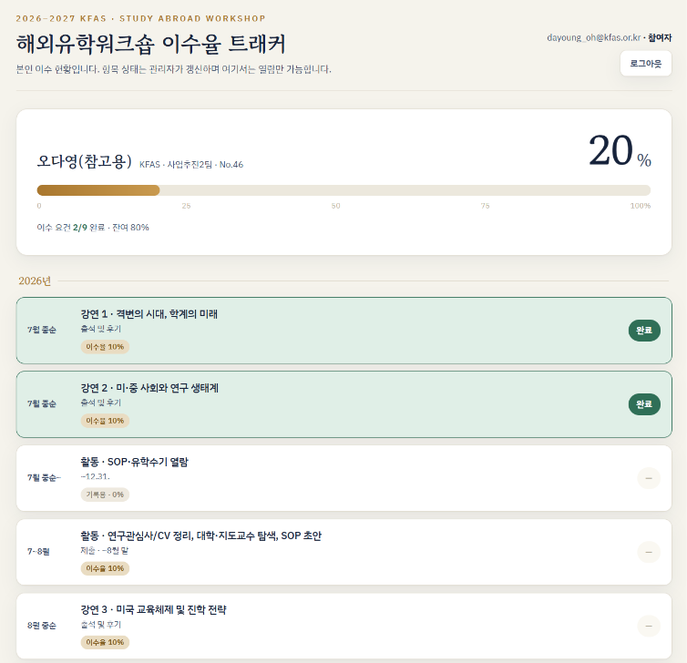
| 항목 종류 | 개수 | 항목당 배점 |
|---|---|---|
| 강연 출석 및 후기 | 5회 | 10점 |
| 멘토링 참석 | 2회 | 10점 |
| 과제 제출 (중간) | 1건 | 10점 |
| 과제 제출 (최종) | 1건 | 20점 |
| 기록용 항목 | 3건 | 0점 |
| 합계 | 12건 | 100점 |
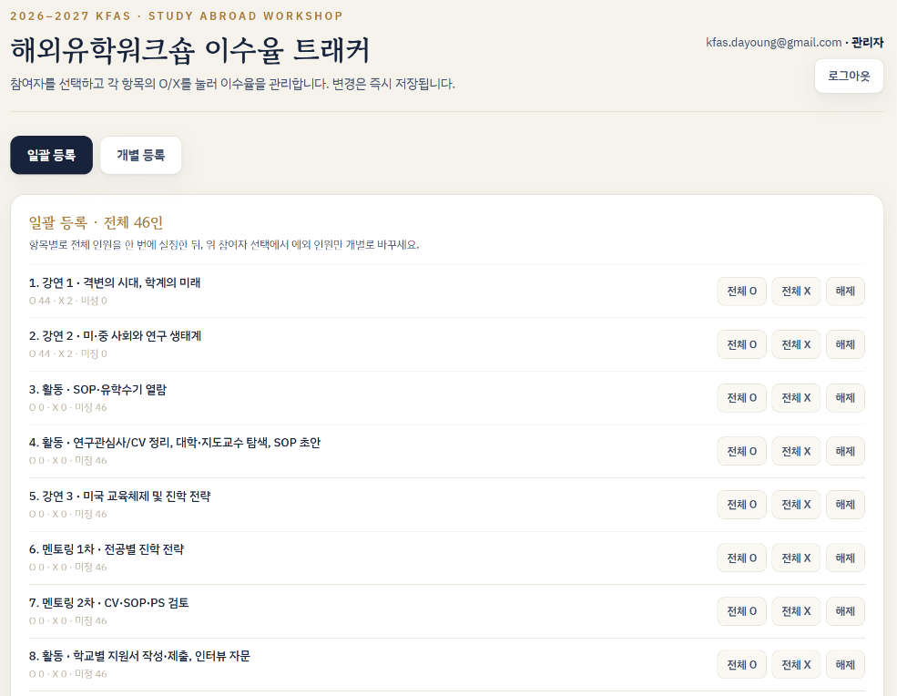
| 처리 범위 | 이전 | 이후 |
|---|---|---|
| 회차마다 개인별 계산·안내 | 2~3시간 | 참여자가 직접 확인 |
| 진도 문의 | 회차마다 | 줄어듦 |
궁금한 사람은 본인이 들어가 확인할 수 있기 때문에 이수율을 개별적으로 안내할 필요 없습니다.
Supabase 로그인 설정은 두 가지 방식으로 할 수 있습니다. DB에 등록된 참여자가 회원가입을 하고 비밀번호를 직접 설정하는 방식과, 이메일을 입력하면 해당 주소로 로그인 링크를 보내는 방식입니다. 저는 이번에는 비밀번호를 따로 만들 필요가 없는 후자의 방식으로 진행했습니다.
수료 기준을 안내해 두기는 했지만 참여자들이 실제로 얼마나 성실하게 이수할지는 아직 모르겠습니다..! 일단 각자 자신의 이수 현황을 쉽게 확인할 수 있도록 만들어 두었으니, 이제 실제 운영에서 어떻게 활용되는지 지켜볼 생각입니다.
인재성장 플랫폼
3-1에 이어서워크순 이수율 Tracker를 만들면서, 로그인한 사람에게 그 사람의 기록만 보여 주는 구조를 만들어 보았습니다. 그 경험을 확장한 것이 지금 만들고 있는 인재성장 플랫폼(인재 DB)입니다.
플랫폼은 크게 두 화면으로 구성되어 있습니다. 참여자가 해마다 자신의 성장 기록을 쌓아가는 '나의 나무(IDP)'와, 그 기록을 바탕으로 서로 교류하는 '숲 산책(동문 네트워크)'입니다.
이 플랫폼은 어떤 도구가 필요해서 만든게 아니라 재단의 인재육성체계가 개편되면서 필요해진 것이라, 사업 구조부터 설명드리고 싶습니다. 사업 배경보다 실제 웹앱이 궁금하시면 3-2-1 나의 나무(IDP)부터 보셔도 됩니다.
플랫폼은 아래 주소에서 직접 열어 볼 수 있습니다. 화면을 열어 두고 따라가며 보시면 이해가 빠릅니다. (참고. 기입된 정보는 모두 dummy data입니다.)
KFAS Fellowship
AI 시대에는 무엇을 아는가보다 무엇을 어떻게 해결하는가가 인재의 조건이 되고 있습니다. 재단은 이러한 흐름 속에서 사회적 가치를 창출하는 인재를 선발·육성하고자 2025년 50주년을 지나며 인재상을 다시 정리했습니다. 새로운 인재상은 Knowledge-driven · Forward-thinking · Action-oriented · Socially-conscious라는 네 가지 방향을 담고 있습니다. 이 인재상을 실현하기 위해 재단이 선발·육성·연구·사회 기여를 아우르며 운영하는 인재육성체계가 KFAS Fellowship입니다.
재단은 이제 학자형에만 머물지 않고, 다양한 인재를 포괄하여 육성합니다. 일곱 가지 인재 유형을 설정하고, 각 유형에서 하나의 알파벳을 가져와 ‘TALENTS’라는 이름으로 묶었습니다. 학자형(Scholar)은 그중 S에 해당하며, 개척가(Trailblazer), 예술가(Artist), 글로벌리더(Global Leader), 기업가(Entrepreneur), 정책가(Negotiator), 전문가(Expert)와 함께 육성합니다.
Horizon 1 · 인재림과 문우림
재단은 학부생을 선발해 핵심 역량을 기르는 단계를 Horizon 1이라 부릅니다. 인재림은 문제정의·문제해결 등 실천을 통해 사회적 가치 창출에 기여하는 인재를, 문우림은 동아시아 고전의 지혜를 현재의 문제 대응과 미래 대비에 적용하는 인재를 양성합니다.
| 프로그램 | 선발 | 과정 | 누적 장학생 |
|---|---|---|---|
| 인재림 | 연 2회 · 기수당 24명 | 1년 | 130명 |
| 문우림 | 연 1회 · 기수당 12명 | 2년 | 54명 |
Horizon 2 · 도약
인재림·문우림에서 길러진 역량은 프로그램 종료와 함께 끝나지 않습니다. 재단은 설계, 교류, 심화 세 과정을 통해 각자가 자신만의 방식으로 그 역량을 발휘하고 성장을 이어가도록 지원합니다. 이 단계가 Horizon 2 「도약」이고, 사회 진출 초·중기까지 스스로 진로를 설계하고 역량을 확장하도록 돕습니다. (제가 속한 사업추진2팀이 Horizon 2 설계를 맡고 있습니다.)
| 과정 | 기간 | 내용 | 예시 |
|---|---|---|---|
| ① 설계 | 수료 후 ~12년 | 자신의 가능성과 진로를 탐색하며 성장 경로를 구체화하는 과정 | 성장 그랜트 (탐색·실험·심화) · 인재성장 지원허브 (계획·연구·플랫폼) |
| ② 교류 | 수료 후 ~15년 | 국내외 인재와 지식과 경험을 나누며 시야와 성장 기회를 확장하는 과정 | Korea-Nordic Future Challenge · 도쿄포럼 Youth Session · SK SUNNY 청년발전행동 · 최종현학술원 국제 학술 포럼 |
| ③ 심화 | 수료 후 ~15년 | 관심 분야의 전문성과 역량을 지속적으로 발전시키는 과정 | 동아시아 연구장학 · 해외유학 지원 · KAIST Impact MBA |
설계 · 인재성장 지원허브
설계 과정의 두 축은 ‘성장 그랜트’와 ‘인재성장 지원허브’입니다.
성장 그랜트(Self-Designed Growth Grant)는 스스로 문제를 정의하고 실행 계획을 설계하면, 재단이 이를 재정적으로 지원하는 3 Track, 즉 ‘3E’ 구조입니다. 분야와 유형에 제한을 두지 않고, 각자가 자신의 성장 과정을 설계하면 재단이 그 실행을 지원한다는 것이 핵심입니다.
성장 그랜트의 지원 대상은 ‘초기 경력 형성기(Early Career Stage)’에 있는 재단 장학생과 문우림·인재림 수료생입니다. IDP 작성과 1차 면담을 완료한 분 가운데, 자신의 문제를 스스로 정의하고 프로젝트로 실행해 보고자 하는 분들이 대상입니다.
| 트랙 | 분류 | 내용 | 기간 |
|---|---|---|---|
| 1 | 탐색 Exploration | 개별 문제의식 및 관심 분야 탐색 | 1년 |
| 2 | 실험 Experimentation | 아이디어 실험 및 초기 실행 | 6개월 단위, 최대 1년 |
| 3 | 심화 Enhancement | 프로젝트 심화 및 장기 실행 (2027년 도입 예정) | 1년 단위, 최대 5년 |
인재성장 지원허브는 성장 여정을 장기적으로 기록하고 분석하여 맞춤형 지원을 설계하고, 장학생들이 서로 연결될 수 있도록 돕습니다. 재단은 페이스메이커(pacemaker)처럼 면담과 멘토링을 통해 곁에서 함께합니다.
| 갈래 | 하는 일 | 상태 |
|---|---|---|
| 인재성장 계획 | IDP 수립 · 정기 면담 · 강연 · 멘토링 · TALENTS Day | 수료생 대상 운영 중 |
| 인재성장 연구 | 성장 여정을 장기 기록·분석해 맞춤형 지원 방안 연구·설계 | 측정·분석 틀 설계 중 |
| 인재성장 플랫폼 | 장학생이 서로 연결되는 기반 | 프로토타입 개발 중 |
플랫폼
여기서 플랫폼이 필요해집니다. 인재성장 계획과 인재성장 연구가 제대로 작동하려면, 장학생들이 자신의 진로를 어떻게 설계하고 있고 어떤 지원을 필요로 하는지가 지속적으로 데이터로 축적되어야 합니다. 그런데 면담 내용이 담당자의 기억이나 흩어진 파일에만 남아 있다면, 해마다 변화를 비교하기도 어렵고 이를 연구 자료로 활용하기도 어렵습니다.
그래서 성장 기록을 개인 단위로, 매년 동일한 방식으로 축적하는 인재성장 플랫폼(인재 DB)을 만들고 있습니다. 장학생 개인의 성장 기록이 재단의 지원 설계로 이어지고, 그 지원이 다시 개인의 성장을 돕는 선순환 구조를 만드는 것이 목표입니다.
구조를 크게 두 개로 나눌 수 있습니다. 나의 나무(IDP)는 자신의 성장 기록을 쌓는 공간이고, 숲 산책(동문 네트워크)은 그 기록을 바탕으로 서로를 발견하고 연결하는 공간입니다. 가장 주요한 목적은 성장 데이터의 아카이빙이지만, 이와 동등한 비중으로 자율적 네트워킹 활성화를 두고 함께 개발하고 있습니다. 왜 ‘연결’에 같은 무게를 두었는지는 3-2-3 플랫폼 유지 방안에서 말씀드리겠습니다.
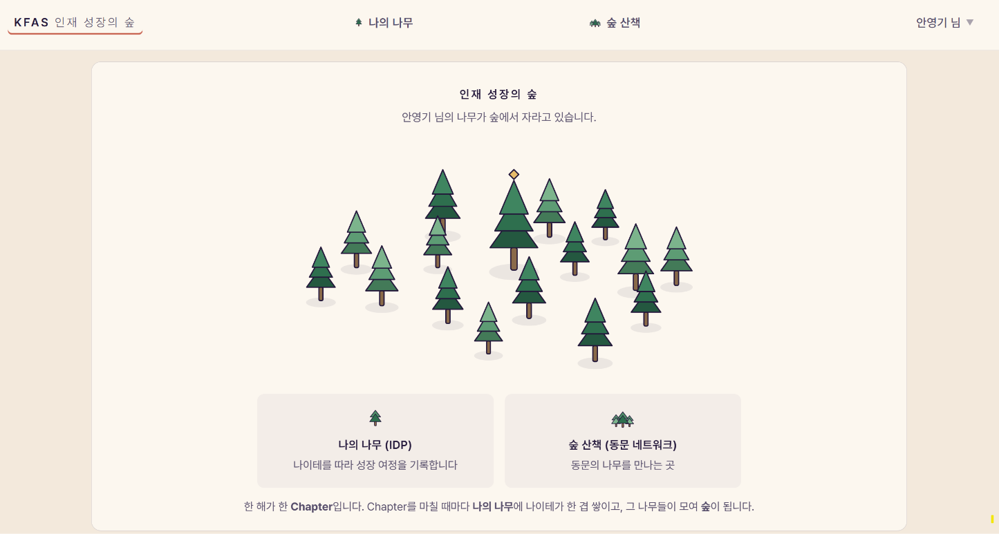
※ 본 자료는 2026년 8월 기준의 체계를 반영합니다. Horizon 2의 구조는 현재도 발전 과정에 있으며, 향후 변경될 수 있습니다.
나의 나무(IDP)
참여자가 ‘나의 나무(IDP)’에 들어오면 가장 먼저 보는 화면입니다. 성장을 한 번의 결과가 아니라 시간에 따라 축적되는 과정으로 바라보고 싶어 ‘나무’라고 표현했고, 이는 나무를 가꾸듯 인재를 키운다는 재단의 철학과도 연결됩니다.
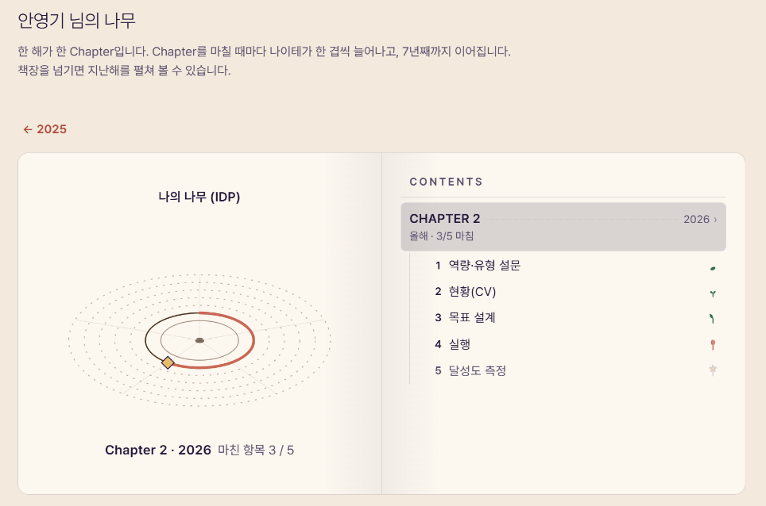
Chapter 하나가 개인성장계획(Individual Development Plan)의 한 해분입니다. IDP는 KFAS 네 국면 안에 다섯 단계로 구성되어 있으며, 앞 단계를 마쳐야 다음 단계가 열립니다.
네 국면은 재단의 이름인 KFAS 네 글자를 딴 것입니다. K(Know Yourself · 나를 안다) → F(Frame Your Future · 미래를 설계한다) → A(Act with Purpose · 목적을 갖고 실행한다) → S(Self-Evaluate the Impacts · 성과와 영향을 성찰한다).
| 국면 | 단계 | 이름 | 하는 일 |
|---|---|---|---|
| K | 1 | 역량 · 유형 설문 | 설문으로 자기 성향과 역량을 확인합니다 |
| 2 | 현황(CV) | 이력서를 올리면 항목별로 정리됩니다 | |
| F | 3 | 목표 설계 | 한 해 동안 무엇을 이룰지 계획을 세웁니다 |
| A | 4 | 실행 | 한 해 동안 무엇을 했는지 기록합니다 |
| S | 5 | 달성도 측정 | 세운 목표에 얼마나 닿았는지 점검합니다 |
KFAS는 제가 여러 곳에서 활용하고 있는 프레임인데, 저는 이것이 삶에도 통용될 수 있다고 생각합니다. 자기 자신을 잘 알아야 앞으로 어디로, 어떻게 나아갈지 전략을 세울 수 있습니다. 그리고 그 전략을 바탕으로 직접 실행하고, 그 과정에서 나와 사회에 어떤 영향을 미쳤는지 성찰합니다. 그 성찰을 통해 다시 자신에 대한 이해를 높이고, 다음 계획을 세우는 순환 과정입니다.
체스로 비유하면, 내가 Knight인지 Bishop인지 알아야 내가 어떤 방식으로 움직일 수 있는지를 알 수 있습니다. 그리고 내가 놓인 환경과 상황을 살펴보면서, 그 안에서 어떤 전략을 시도할지 결정하게 됩니다.
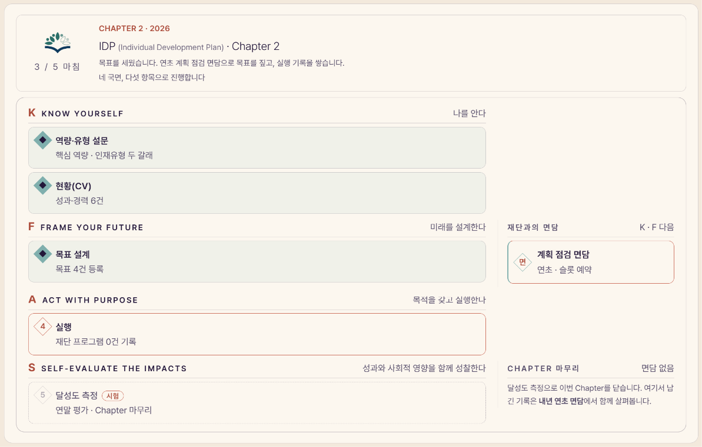
플랫폼에서 인재 정보는 두 층으로 쌓입니다. 이름·프로그램·기수·학력·전공처럼 형식이 일정한 정형 정보는 재단이 입력하고, 경력·연구·수상처럼 사람마다 다르고 계속 확장되는 세부 정보는 본인이 올린 CV에서 추출합니다. 이 두 층의 정보를 쌓고, 이를 검색과 연결에 활용하는 구조가 이 플랫폼의 핵심입니다.
다섯 단계 중 CV를 따로 말씀드리는 이유가 여기에 있습니다.
CV와 Resume는 ① 본인의 대외 경력과 활동을 비교적 세밀하게 보여주는 자료이고, ② 경력이 바뀔 때마다 본인이 주기적으로 갱신하며, ③ 외부 공개를 염두에 두고 작성되는 자료이기 때문에 플랫폼에서의 정보 공개에 대한 동의를 설명하고 받기에도 상대적으로 수월합니다.
이 특성은 뒤에서 말씀드릴 동문 참여에서 더 중요해집니다. CV 업로드는 이미 가지고 있는 파일 하나를 올리는 방식이기 때문에 진입 허들을 낮추고, 별도의 추가 입력을 요구하지 않으면서 최신에 가까운 정보를 확보할 수 있습니다. (단, 이 방식은 참여자가 CV 혹은 Resume를 정기적으로 업데이트하는 업종에 종사할 때에 한하여 성립한다는 게 이 전략의 한계입니다.)
그리고 새 경력이나 수상 소식이 CV에 추가되면, 참여자가 이를 재단에 알리고 재단은 이를 소식지에 소개함으로써 참여자의 성취를 다시 동문 사회에 알리는 구조를 생각하고 있습니다.
CV는 사람마다 서식이 제각각이라 그대로는 구조화된 검색에 활용하기 어렵습니다. 그래서 네 단계로 정리하는데, 문서를 다듬고 검산하는 일은 자바스크립트 규칙이 맡고, 항목으로 나누는 일은 AI가 맡습니다.
| 단계 | 맡는 쪽 | 하는 일 |
|---|---|---|
| ① 다듬기 | 규칙 | 깨진 글자를 고치고 문서를 절 단위로 나눕니다 |
| ② 항목 나누기 | AI | 각 줄을 유형 · 제목 · 기관 · 기간으로 나눕니다 |
| ③ 검산 | 규칙 | 빠진 항목이 없는지 원문과 대조합니다 |
| ④ 확정 | 사람 | 후보 항목을 검토하고 확정합니다 |
먼저 규칙이 문서를 읽을 수 있는 상태로 다듬습니다. PDF에서 글자를 뽑으면 T eaching처럼 글자가 쪼개지거나 ResearchExperience처럼 단어가 붙어 나오는 일이 잦은데, 미리 만들어 둔 단어 사전으로 이를 복원합니다. 그다음 학력·경력·출판 같은 절 제목을 찾아 문서를 절 단위로 나눕니다. 정해 둔 규칙을 그대로 적용하기 때문에 같은 문서를 넣으면 언제나 같은 결과가 나옵니다.
항목으로 나누는 일은 AI가 맡습니다. 같은 경력 한 줄도 사람마다 적는 순서가 달라 기간을 앞에 쓰는 사람도 있고 기관을 앞에 쓰는 사람도 있어, 이 부분은 규칙으로 감당하기 어렵습니다. AI는 절 하나씩 전달받아 각 줄을 「유형·제목·기관·기간」으로 나눈 목록을 돌려줍니다. 유형은 학력·경력·출판·수상 등 14종으로 정해 두었습니다.
AI가 돌려준 결과를 그대로 믿지는 않습니다. 절마다 연도가 들어간 줄 수를 세어 두고, 추출된 항목 수가 그보다 크게 모자라면 응답이 잘린 것으로 보고 그 구간만 다시 요청합니다. 원문에 수상 절이 있는데 수상 항목이 하나도 없으면 화면에 경고를 띄웁니다.
이렇게 나온 항목도 아직 후보입니다. 관리자가 확인해야 확정되고, 사람이 무엇을 고쳤는지도 함께 기록해 이후 AI 요청 문구를 보완하는 근거로 씁니다.
이력서를 뽑는 코드는 잘 정리된 CV에서는 잘 작동하지만, 글자가 깨져 들어온 CV에서는 자주 틀립니다. 그래서 앞서 말씀드린 깨진 형태들을 일부러 넣은 시험용 CV 묶음을 만들어 두었습니다. 코드나 AI 요청 문구를 고칠 때마다 이 묶음을 다시 돌려, 고친 부분은 실제로 나아졌는지, 기존에 잘 되던 부분에서 새로운 오류가 생기지는 않았는지 함께 확인합니다.
원본 파일에는 이력서에 업무와 무관한 개인정보가 포함될 수 있기 때문에 별도로 보관하지 않고, 확정된 항목만 저장합니다. 1-5에서 개인정보를 가리던 것과 같은 이유입니다.
경력이 더해져 CV를 갱신하면 새 CV를 다시 올리면 됩니다. 플랫폼은 새 문서를 기존 기록과 대조해 새로 생긴 항목만 추가하고, 이미 확정된 항목은 그대로 둡니다. 새 CV에서 빠진 항목도 지우지 않고 끝난 것으로 표시합니다.
소속·직무·거주 지역처럼 시간이 지나며 바뀌는 항목도 마찬가지입니다. 현재 값으로 덮어쓰지 않고 변경될 때마다 이력으로 한 줄씩 쌓습니다. 그래야 과거의 상태가 사라지지 않아 성장 과정을 되짚어 볼 수 있고, 매년 같은 기준으로 쌓인 기록은 연도별 비교와 연구 자료로도 활용할 수 있습니다.
이 화면은 경력과 면담 내용 같은 개인정보를 다루기 때문에, 수집 전에 동의를 받습니다. 동의 항목은 정보 수집, 연구 활용(AI 처리 포함), 동문 프로필 공개의 세 갈래로 분리해 각각 받습니다. 면담은 별도의 동의 아래 녹음하고 텍스트로 전환해 보존하며, 정해진 보존 기간이 지나면 파기합니다.
숲 산책
나의 나무(IDP)가 기록을 쌓는 곳이라면 숲 산책은 그 기록을 바탕으로 동문이 교류하는 곳입니다.
| 화면 | 하는 일 |
|---|---|
| 동문 현황 | 전체가 어느 지역 · 어느 분야에 퍼져 있는지 세계지도 위에서 봅니다 |
| 동문 찾기 | 왼쪽 대화창에 말로 조건을 쌓고, 오른쪽 지도 · 카드 · 목록에서 사람을 찾습니다 |
| 게시판 | 구인·구직 / 연구·협업 / 행사·모임 / 자료·정보 / 도움 요청 |
| 커피챗 | 만나고 싶은 사람에게 요청을 보내고 답합니다 |
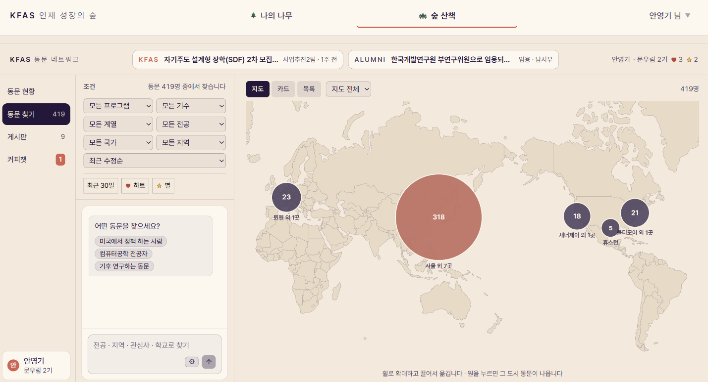
만나고 싶은 사람에게 요청을 보내고 받은 쪽이 수락하거나 보류합니다. 메일로 주고받으면 성사 여부를 따로 기록해야 하지만 화면에서 요청하면 그 과정이 표에 남습니다.
요청 상태는 대기·수락·보류·철회 네 가지뿐이고 물러선 요청도 지우지 않고 상태만 바꿉니다. 지워 버리면 요청했다가 물러선 사실 자체가 사라지기 때문입니다. 자기 자신에게는 보낼 수 없다는 규칙과 상태가 네 가지뿐이라는 규칙은 화면이 아니라 데이터베이스의 표 자체에 걸어 두었습니다.
동문 찾기에서 「기후」로 검색하면 「탄소중립」을 연구하는 사람도 나와야 합니다. 같은 글자가 든 사람만 찾아서는 정작 만나야 할 사람이 빠질 수 있어서 뜻으로 찾는 검색이 필요했습니다.
그렇다고 검색을 통째로 AI에게 맡길 수는 없습니다. AI 모델은 우리 동문 자료를 학습한 적이 없어 그냥 물으면 모르는 내용을 지어낼 수 있고, 물을 때마다 자료 전체를 함께 보내는 것도 양과 비용 면에서 무리입니다. 그래서 검색이 먼저 후보를 추려 두고 AI에게는 그 추린 자료만 건네 판단하게 하는 방식을 썼습니다. 이런 구조를 RAG(Retrieval-Augmented Generation, 검색 증강 생성)라 부릅니다. AI가 자기 기억이 아니라 검색해 온 자료를 근거로 답하게 만드는 방법입니다.
검색은 세 층으로 되어 있고, 3-2-1에서 말씀드린 자료의 두 층을 그대로 씁니다. 조건은 재단이 입력한 정형 정보로 거르고, 뜻은 CV에서 추출한 세부 정보로 찾습니다.
1) 조건 거르기 — 「미국에서 일하는 경제학자」라고 물으면 먼저 문장에서 지역과 전공을 읽어, 재단이 입력한 정형 정보에서 조건에 맞는 사람만 남깁니다. 이 단계는 AI 없이 정해 둔 규칙으로 처리되어 결과가 언제나 같습니다.
2) 순위 매기기 — 여기서 뜻이 들어옵니다. 남은 사람들을 CV에서 추출한 조각으로 견줍니다. 낱말 점수는 글자가 겹치는 정도를 세는데 한국어는 조사가 붙어 「기후」와 「기후를」이 다른 낱말로 잡히니 낱말과 두 글자 조각을 함께 셉니다. 벡터 점수는 AI가 만듭니다. 문장을 AI 모델에 주면 뜻을 담은 숫자 목록으로 바꿔 주는데 글자가 달라도 뜻이 가까우면 숫자가 가까워집니다. 「기후」로 「탄소중립」이 걸리는 것은 이 점수 덕분입니다.
두 점수는 사람 단위로 합칩니다. 한 사람의 CV는 여러 조각으로 나뉘어 있어 조각 점수를 그대로 더하면 글이 긴 사람이 무조건 위로 올라옵니다. 그래서 가장 높은 조각을 그 사람의 점수로 삼고 나머지는 조금만 더합니다.
3) 재정렬 — 이렇게 추린 상위 후보 목록을 질문과 함께 AI에게 건네 질문에 맞는 순서로 다시 세우게 합니다. AI는 건네받은 후보 안에서만 고를 수 있어 목록에 없는 사람을 지어내지 못합니다. 검색이 추리고 AI가 다듬는 RAG의 구조가 여기에 있습니다.
개발은 기준선부터 만들었습니다. AI가 없는 낱말 검색을 먼저 완성하고 시험 질문과 정답 묶음으로 점수를 잰 뒤에 벡터와 재정렬을 한 층씩 얹으며 기준선보다 나아지는지를 확인했습니다. 정답은 사람이 임의로 매기지 않고 정형 자료에서 뽑았습니다. 「유럽에서 일하는 경제학자」의 정답은 지역이 유럽이고 전공이 경제학인 사람 전원입니다. 점수 계산은 평가기와 실제 검색이 한 벌을 같이 씁니다. 따로 두면 평가 숫자가 좋아져도 화면이 좋아졌다는 보장이 없습니다.
이 검색은 배포한 화면에서 실제로 돌아갑니다. 「출산율 떨어지는 문제」라고 물으면 저출생을 연구하는 사람들이 나옵니다. 그 말은 명부 어디에도 없지만 뜻이 가까워서 걸립니다. 점수를 재고 다듬는 루프는 지금도 돌리고 있습니다.
이 검색에서 AI가 하는 일은 뜻을 숫자로 바꾸는 것과 추려진 후보의 순서를 다시 세우는 것 두 가지입니다. 조건을 거르고 점수를 합치는 일은 규칙이 하고 결과에서 누구에게 연락할지는 사람이 정합니다.
화면이 데이터베이스에 접속할 때 쓰는 키는 공개를 전제로 만들어진 것이지만 AI를 부르는 키는 사용량에 따라 비용이 발생하므로 화면에 노출하면 안 됩니다. 그래서 3-1과 달리 이번에는 서버 쪽에서 코드를 실행할 수 있는 Vercel에 올렸습니다.
구성은 Supabase + Vercel + GitHub입니다. 프레임워크 없이 HTML 한 장씩으로 만들었습니다. AI에게 고쳐 달라고 할 때 파일이 적을수록 수정할 자리를 찾기 쉽기 때문입니다.
동문 자료가 아직 비어 있어서 숲 산책은 지금 시험 자료로 돌아가고 있습니다.
플랫폼 유지 방안
여기부터는 만든 것이 아니라 아직 풀지 못한 문제입니다. 화면을 만들어도 그 안이 비어 있으면 소용이 없습니다. 이 쪽은 답보다 질문이 많습니다.
성장 그랜트나 정기 면담을 몇 년씩 이어 갈 학생이 얼마나 될까요. 성장 그랜트는 애초에 학자형이나 창업가처럼 장기 지원이 필요한 인재를 위해 설계된 지원입니다. 진로 고민이 빨리 끝나는 학생도 있고, 인재림에 지원하는 학생들은 학자형과는 결이 조금 다르다고 생각합니다.
그렇게 보면 Horizon 2로 오랜 기간 재단과 교류하는 모수는 시간이 갈수록 줄어듭니다.
진로가 이미 정해져 면담이나 그랜트가 필요하지 않은 학생에게 재단이 줄 수 있는 가장 큰 지원은 무엇일까요. 초기 경력 형성기에 가장 필요한 것은 아마 현직자 멘토링이라 생각합니다.
다만 재단이 일일이 주선하는 방식은 참여자가 늘면 지속하기 어려워, 스스로 찾고 스스로 요청하는 자율적인 연결 구조를 만들어 두는 쪽이 낫다고 판단했습니다. 숲 산책이 기록의 부속 기능이 아니라 플랫폼의 두 번째 목적이 된 이유가 여기에 있습니다.
연결이 돌려면 동문 멘토 풀이 두터워야 합니다. 동문 정보는 두 갈래로 들어옵니다. 1) 재단이 이미 가진 정형 자료(이름·프로그램·기수·학력·전공 등)를 업로드하고, 2) 본인이 CV나 Resume를 올립니다.
| 갈래 | 무엇을 | 누가 넣나 |
|---|---|---|
| 정형 자료 | 이름 · 성별 · 프로그램 · 기수 · 출생연도 · 학력 · 전공 | 재단이 이미 가진 것을 올립니다 |
| CV · Resume | 지금 어디서 무엇을 하고 있는지 | 본인이 파일 하나를 올립니다 |
동문에게 처음부터 긴 입력 양식을 요청할 수는 없는데 CV 업로드는 이미 있는 파일 하나를 올리는 일이라 허들이 가장 낮으면서 재단은 가장 최신 정보를 얻습니다. 올린 뒤에는 3-2-1의 CV 정리 과정을 그대로 타기 때문에 장학생과 동문이 같은 입구를 쓰게 됩니다.
이제 남는 질문은 동문이 왜 들어오는가입니다. 본인 활동 지역에 어떤 동문이 있는지 열람할 수 있다는 것만으로 참여를 유도할 수 있을지 아직 모르겠습니다.
지금 생각은 동문 간에, 그리고 재단과 장기 협력 관계를 만들 수 있는 시스템이어야 한다는 것입니다. 재단에 새로운 소식을 전하고 함께 일할 기회가 생긴다면 스스로 정보를 등록하러 오지 않을까 싶어, 동문 소식을 KFAS 소식과 함께 올리는 구조를 그려 두었습니다.
이 질문에는 아직 답이 없습니다. 좋은 생각이 있으시다면 방명록으로 알려 주시면 감사하겠습니다.
아직 설계 단계입니다. 여기 적은 것은 만들어 본 결과가 아니라 현재 만들려는 방향입니다.
연구자가 아닌 진로를 택한 분들은 CV를 따로 관리하지 않을 수도 있습니다. 그분들에게는 다른 진입점이 필요한데 아직 답이 없습니다.
사람이 왜 자기 정보를 갱신하는지는 화면을 잘 만든다고 답이 나오는 질문이 아닙니다. 여기까지가 지금 제가 아는 것입니다.
AI에 대한 생각
이번 Challenge를 통해 AI를 직접 많이 활용해 보고 AI에 대해 고찰하는 것이 큰 목적이었는데, 그 과정에서 제가 생각한 것 가운데 세 가지를 짧게 말씀드리려 합니다. 어디까지나 제 생각이니 틀린 부분이 있더라도 편하게 들어주시면 감사하겠습니다!
아직 우리는 AI와 주로 말과 글, 곧 언어로 소통합니다. 그래서인지 언어, 특히 기호논리에 강한 사람이 AI를 더 잘 사용하는 거 같습니다. 원하는 것을 적확한 표현을 통해 지시해야 하고, AI가 내놓은 답과 그 논리를 이해한 뒤에 다시 다음 지시를 줘야 하기 때문입니다.
그래서 요즘 학생들이 언어학과나 철학과를 선호한다는 이야기도 납득이 갑니다. (정말 많이 가는지는 저도 잘 모르겠습니다.)
다만 언젠가 Physical AI가 발달하면 언어를 넘어선 방식으로도 AI와 소통하게 되지 않을까 싶습니다. 저도 저희 집 고양이와 지내다 보면 비언어적인 표현만으로 얼마나 많은 감정과 정보, 의도를 전달할 수 있는지 가끔 놀랄 때가 있습니다.
그때가 되면 로봇이 제 표정을, 이를테면 잔뜩 화가 난 얼굴을 읽고 눈치껏 제가 원하는 방향으로 처리해 주지 않을까요...
지금 제가 하는 일을 100으로 나눠 보면, 처음 10은 제가 하고, 10부터 80까지는 AI가 하고, 마지막 20은 다시 제가 하는 거 같습니다. 물론 과제마다 비중은 다르겠고, 아마 웹앱 제작 같은 예시에 해당하는 이야기일 거 같습니다.
사실 80에서 멈춰도 됩니다. AI를 이용하면 적당한 수준까지는 꽤 쉽게 완성이 됩니다. 그런데 결과물이 마음에 들지 않기 시작하면 80에서 100 사이에 아주 많은 노력을 들이게 되는데 이즈음부터는 취향과 예술의 영역이 아닐지...
이 웹앱도 구조 자체는 금방 잡혔는데, 제 취향에 맞게 다듬는 데는 꽤 오랜 시간이 걸렸습니다. 웹에서의 제 취향이 무엇인지 저도 잘 모르는 상태로 AI와 함께 만들다 보니 그랬던 거 같습니다. 디자인도, 문체도 마음에 들지 않아 계속 고치게 되었습니다. 물론 제가 이것저것 직접 해 보고 만들어 보는 것을 좋아해서이기도 합니다.
그런데 취향 역시 결국 선택과 행동이 쌓여 만들어지는 데이터라고 생각하면, 이 취향까지 AI가 참고할 수 있는 일종의 스킬로 만들어 처음부터 저의 맥락과 취향을 충분히 전달할 수 있지 않을까 생각했습니다. 처음에 15 정도의 노력을 들여 맥락을 충분히 건네고, AI가 95까지 완성하게 하는 식입니다.
처음 15까지의 노력이 중요하다고 생각하는 또 하나의 이유는, AI가 처음 만들어 준 결과물이 머릿속에 하나의 틀로 박히기 때문입니다. 말 그대로 '딸깍'해서 나온 결과를 한 번 기준으로 삼기 시작하면, 그 틀에서 벗어나 전혀 다른 방식으로 다시 생각하기가 쉽지 않습니다.
그래서 오히려 처음에 내가 무엇을 중요하게 생각하는지, 어떤 방식과 결과를 선호하는지를 충분히 고민한 뒤에 AI에게 지시하는 것이 중요하다고 생각합니다.
마지막 5를 남겨 둔 이유는 끝에 남는 것은 결국 사람의 몫이라는 생각이 들었기 때문입니다. AI가 95까지 만들어 주더라도 그것을 계속 유지/보수하는 일, 보안과 같은 문제를 책임지는 일, 무엇보다 AI가 내놓은 결과가 사실인지 판단하는 일까지 AI에게 맡길 수는 없을 거 같습니다. (제가 만든 마스킹 도구, 개별 메일 전송 도구도 저는 전공자가 아니기 때문에 유지, 보수, 보안을 책임질 수 없어 배포는 못 하겠다는 결론에 도달했습니다.)
결국 AI에게 일을 많이 맡길수록 오히려 처음의 15와 마지막의 5, 즉 내가 무엇을 원하는지 정하고 그 결과에 책임지는 일이 더 중요해지는 거 같습니다.
그동안 저는 Claude(위)·GPT(촉)·Gemini(오)를 AI 삼국시대라 비유해 왔는데, 요즘 둘러보니 삼국시대가 아니라 춘추전국시대에 가까운 거 같습니다. Kimi, Qwen, DeepSeek 같은 잠룡들이 계속 등장하고 있어 언제 누가 패권을 가져갈지 모르는 판국입니다. (사용자 입장에서는 누군가 빨리 이 난세를 평정해 주셨으면 하는 마음입니다...^^)
일반적인 추론 능력은 이제 대체로 상향평준화되어 가는 거 같습니다. 그래서 앞으로는 각 모델이 무엇에 특화되어 있는지를 살펴보고 취사선택해 사용하는 것이 중요하다고 느꼈습니다.
저는 코딩에는 Claude를, 일반적인 대화나 문장 교정에는 ChatGPT를 주로 사용합니다. 무료로 API를 연결해야 할 때는 Gemini 계열 모델을 종종 사용하고 있습니다.
그래서 지금 가장 좋은 도구가 무엇인지 그때그때 직접 써 보는 편이 좋다고 생각하며, 토큰은 다다익선입니다. (토큰 경제학을 여실히 느끼고 있습니다.) 다만 '좋은 모델'이 너무 빨리 바뀌는 것도 피로한 일입니다.
Claude Opus 5를 고작 두 달 정도 써 보는 사이 금방 모델 성능이 안 좋아진다는 것을 느꼈고, 사용 중 먹통이 되는 일도 있었습니다. 찾아보니 다수의 사용자들이 Claude Code에 대한 분노를 표출하며 Codex로의 이주를 추천하고 있었습니다 (하지만 vice versa였습니다.)
게다가 이제는 나름대로 스킬과 커넥터를 많이 연동해 두다 보니, 다른 생태계로 옮겨가는 것도 꽤 피곤한 일이 된 거 같습니다. 마치 갤럭시에서 Apple로, 혹은 Apple에서 갤럭시로 옮겨가는 것처럼 말입니다. (fyi. 이런 현상을 Lock-in Effect라 하던데, 저는 삼성페이를 쓰고 싶어서 올여름에 갤럭시로 갈아탔습니다.)
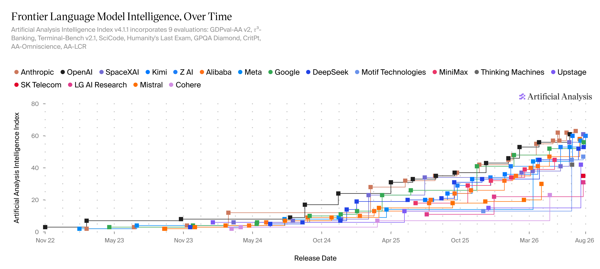
맺음말
여기까지 읽어주셔서 감사드립니다! 사실 전문 읽으셨을 거라는 기대는 하지 않고(저도 읽기 힘듭니다....), 필요한 부분만 취사선택하여 보시는 정도로만 활용하셔도 좋을 거 같습니다.
Challenge에 낼 자료를 작성하는 게 생각보다 방대하여 도중에 진심으로 그만두고 싶었는데, 시작한 이상 끝은 봐야지 라는 어줍잖은 책임감으로 완벽하지는 않지만 완성은 해 보았습니다. 혹시 보이는 비문은 넓은 아량으로 용서 바랍니다.
저는 미술대학원에서 석사 학위를 받았는데, 수료 후 석사 논문을 안 쓰고 도망갈까?를 한 때 진지하게 생각해 본 적이 있습니다. 자료를 작성하며 문득 석사 논문을 작성하던 시절이 떠오르며 자승자박이라는 사자성어를 함께 숙고하게 되었습니다.
요즘 크리스토퍼 놀란 감독의 <오디세이>를 많이 보시던데, 초기 오디세우스의 여정의 목적은 귀향이었지만, 가지 않아도 될 곳에 구태여 찾아가보고(키클롭스의 섬), 듣지 않아도 될 노래(세이렌)를 몸을 묶어가며 듣는 오디세우스야말로 자승자박의 아이콘이 아닐지... 그래서 보셨을 지는 모르겠지만 소소한 재미로 홈페이지에 배(ship, ) 아이콘이 집()으로 돌아가는 컨셉으로 본 웹앱을 디자인해 보았습니다.
2024년 7월, 바이브 코딩이라는 단어가 생기기도 전에 제가 하던게 바이브 코딩이라는 것도 모르고 AI로 Python 코드를 고쳐가며 PDF를 병합하던 때, 분명 '이 코드를 만들어 내지 못 하면 왠지 한동안 저녁에 집에 돌아가지 못 할 거 같다'라는 두려움이 엄습하여 시작했었습니다. 그러나 하다보니 순간 순간 재미를 느끼기도 했고, 저녁이나 주말에도 코드를 고치며 놀던 기억이 있습니다. 자료를 작성하면서 당시를 다시 떠올려 보니, 이것이야말로 ‘오디세이 프로젝트’가 아닐까 하는 생각을 혼자 하며 이번 Challenge 과제를 작성했습니다.
문득 보면 사람은 오디세우스처럼 안정과 도파민 추구 사이에서 갈팡질팡하며(이것이 쇼펜하우어가 말하는 "인생은 고통과 권태 사이를 오락가락하는 시계추와 같다"는 로직일까요?), 내가 왜 이러고 있지?라는 생각이 드는 상황에 자신을 몰아넣으면서도 와중에 우연히 재미를 느끼고 사는, 참 다양하고도 모순되는 마음을 품고 사는 구나 싶습니다.
그런 의미에서 제가 좋아하는 Walt Whitman의 시 구절을 하나 남기고 이만 글을 줄이겠습니다.
Do I contradict myself?
Very well then I contradict myself,
(I am large, I contain multitudes.)
감사합니다.
오다영 드림.
AI 활용 넓히기
AI를 사용하면서 스킬 · 플러그인 · 커넥터 셋을 알아두니 작업이 더 편했습니다. 저도 사용한 지 얼마 되지 않아 아주 자세히는 몰라, 저도 배우고자 부록을 (AI에게 시켜) 작성해 보았습니다. 참고만 해 주시면 좋을 것 같습니다!
AI에게 이런 지시를 매번 다시 적는 대신, 작업에 필요한 지침을 미리 만들어 두거나 외부 서비스와 연결해 두는 방법이 있습니다.
특정 작업을 어떻게 처리할지 적어 둔 절차서입니다. 대표적으로 SKILL.md처럼 마크다운 문서로 작성할 수 있습니다. 코드 자체라기보다 "이런 작업을 할 때는 이런 순서와 규칙을 따라라"라고 AI에게 알려 주는 문서에 가깝습니다.
예를 들어 서류 병합 작업이라면 대상 폴더 확인 → 파일명으로 서류 종류 판별 → 정해진 순서로 정렬 → 하나의 PDF로 병합 → 이름 규칙에 맞춰 저장하는 식으로 적어 둘 수 있습니다.
한 번 만들어 두면 같은 작업을 할 때 처음부터 설명을 반복할 필요가 없고 사람이 읽고 직접 수정할 수도 있습니다.
AI에 기능이나 외부 도구를 추가하는 확장 기능입니다. 여러 스킬이나 도구, 설정 등을 하나의 묶음으로 제공하는 형태도 있습니다.
스킬 하나가 "이 작업은 이렇게 하라"는 절차서라면 플러그인은 여러 기능을 한꺼번에 추가하는 꾸러미에 가깝습니다.
다만 플러그인을 묶고 설치하는 방식은 AI 도구마다 다릅니다. 따라서 플러그인은 반드시 스킬을 묶은 것이라기보다, AI의 기능을 확장하는 단위라고 이해하는 편이 좋습니다.
AI가 Gmail · Google Drive · 문서 · 데이터베이스 같은 외부 서비스와 연결될 수 있게 하는 기능입니다. 이미 제공되는 커넥터라면 직접 코드를 작성하지 않고 로그인하고 권한을 허용하는 것만으로 연결할 수도 있습니다.
MCP(Model Context Protocol)는 AI와 외부 도구 · 데이터를 연결하기 위한 개방형 표준 가운데 하나입니다. 따라서 커넥터와 MCP가 같은 말은 아니고, MCP를 이용해 AI와 외부 서비스를 연결할 수 있다고 이해하면 됩니다.
스킬이 "어떻게 할지"를 정한다면 커넥터는 "어떤 서비스와 연결해서 무엇을 가져오거나 실행할 수 있는지"를 넓혀 줍니다.
셋의 차이
| 구분 | 스킬 | 플러그인 | 커넥터 |
|---|---|---|---|
| 무엇 | 작업 절차서 | AI 기능을 확장하는 꾸러미 | 외부 서비스와 연결하는 통로 |
| 하는 일 | 이럴 때 이렇게 | 기능이나 도구를 추가 | 외부 데이터 · 서비스에 접근 |
| 예 | 서류 병합 절차 | 여러 작업 기능 묶음 | Gmail · Drive 연결 |
스킬은 AI를 다시 학습시키는 것은 아닙니다. AI 모델 자체를 바꾸는 것이 아니라, 해당 작업을 할 때 참고할 지침을 미리 제공하는 방식입니다.
스킬이나 플러그인을 다른 사람이 만든 경우에는 무엇을 하라고 적혀 있는지 먼저 확인하는 것이 좋습니다. 결국 AI에게 새로운 지시를 추가하는 것이기 때문입니다.
커넥터는 특히 권한을 잘 확인해야 합니다. Gmail · Drive 같은 업무 계정을 연결하면 AI가 실제 메일이나 파일에 접근하거나 작업을 실행할 수 있습니다.
또한 스킬 · 플러그인 · 커넥터의 설치 방식과 지원 범위는 AI 도구마다 다릅니다. SKILL.md나 MCP처럼 여러 도구에서 사용할 수 있는 표준이나 형식이 있지만 한 도구에서 되는 기능이 다른 도구에서도 그대로 작동한다고 볼 수는 없습니다.
Git과 GitHub
저는 웹앱을 만들면서부터 Git과 GitHub를 사용하기 시작했습니다. 사실 이 부분도 사용한 지 얼마 되지 않아 지식이 깊지는 않습니다. 제가 하는 부분은 수정사항이 있다면 "ㅇㅋ 커밋 푸시"(인재성장 플랫폼처럼 Branch가 나뉜 프로젝트라면 종종 '머지'까지 붙입니다.)를 AI가 하자 라고 하면 얘기하는 정도입니다. 그마저도 AI가 이제 할 시점이 되면 미리 예상 답변을 만들어두고 기다립니다... (이마저도 알아서 해 주면 좋겠습니다...^^)
버전 관리는 무엇을 언제 어떻게 바꿨는지 기록해 두고, 필요하면 이전 상태로 돌아갈 수 있게 하는 일입니다. AI를 쓰든 안 쓰든 여러 번 수정하는 작업이라면 유용하지만 특히 코드는 수정과 테스트를 반복하기 때문에 버전 관리의 필요성이 큽니다.
반대로 한 번 만들고 거의 수정하지 않는 간단한 파일이라면 굳이 Git을 사용할 필요는 없습니다. 파일을 몇 개 복사해 두는 것만으로도 충분할 수 있습니다. Git은 "모든 파일에 반드시 써야 하는 도구"라기보다, 변경 이력을 남기고 이전 상태로 돌아가야 하는 작업을 위한 도구라고 생각하면 될 거 같습니다.
누구나 한 번쯤 이런 폴더를 본 적이 있을 겁니다.
사업계획서.docx
사업계획서_수정.docx
사업계획서_수정2.docx
사업계획서_최종.docx
사업계획서_최종_진짜최종.docx
사업계획서_최종_진짜최종_팀장님피드백반영.docx이것도 일종의 버전 관리입니다. 다만 사람이 파일 이름을 붙여 가며 관리하는 방식이라 몇 번만 수정해도 어느 파일이 최신인지, 무엇이 달라졌는지, 왜 바꿨는지 알기 어려워집니다.
Git은 이 일을 대신합니다. 파일을 수정할 때마다 새로운 파일을 만드는 것이 아니라, 하나의 프로젝트에 변경 이력을 차곡차곡 기록합니다. 이전 상태를 확인하거나 필요한 시점으로 되돌릴 수도 있습니다.
| 수작업 | Git |
|---|---|
| 어느 파일이 최신인지 확인 | 현재 상태가 하나 |
| 파일을 열어 비교 | 변경 내용을 비교 |
| 파일 이름에 수정 이유를 적음 | 커밋 메시지로 이유를 기록 |
| 이전 파일을 따로 보관 | 이전 기록에서 복원 |
둘을 한 세트처럼 생각하기 쉽지만 역할이 다릅니다.
| 구분 | Git | GitHub |
|---|---|---|
| 무엇 | 버전 관리 프로그램 | Git 저장소를 온라인에 보관하고 협업할 수 있게 해 주는 서비스 |
| 어디서 | 내 컴퓨터 | 인터넷 |
| 주요 역할 | 변경 기록 · 비교 · 복원 | 저장 · 공유 · 협업 · PR 등 |
| 인터넷 필요 | 없어도 사용 가능 | 온라인 서비스이므로 필요 |
| 비유 | 내 컴퓨터에 있는 사진의 촬영 이력 | 그 사진을 올려두고 함께 보는 온라인 공간 |
GitHub는 Git으로 관리하는 프로젝트를 온라인 저장소(repository)에 올려두고, 다른 사람과 공유하거나 변경 내용을 검토할 수 있게 합니다. GitHub가 없어도 Git은 사용할 수 있고 GitHub가 아닌 다른 서버를 원격 저장소로 사용할 수도 있습니다.
Git = 내 컴퓨터에서 변경 이력을 관리하는 도구
GitHub = 그 Git 프로젝트를 온라인에 올려두고 함께 쓰는 곳
Git이 처음 어려운 이유는 "파일을 고쳤는데 왜 바로 기록되지 않는가?" 때문입니다. 실제로는 다음 네 공간을 거칩니다.
① 작업 폴더 — 평소처럼 파일을 열어 코드를 고치는 곳입니다.
② 스테이지 — 이번에 기록할 변경 사항을 골라 올려놓는 곳입니다. git add가 이 일을 합니다. 여러 파일을 고쳤더라도 그중 일부만 다음 기록에 포함시킬 수 있습니다.
③ 로컬 저장소 — git commit을 하면 스테이지에 올려 둔 변경 사항이 하나의 기록으로 저장됩니다. 이 기록이 바로 커밋(commit)입니다. 커밋에는 변경 내용뿐 아니라 언제, 누가, 어떤 메시지로 기록했는지도 남습니다.
④ GitHub — 로컬에서 만든 커밋을 git push하면 GitHub에 올라갑니다. 이제 다른 컴퓨터에서도 가져올 수 있고 다른 사람과 공유하거나 협업할 수 있습니다.
고친다 → 담는다 → 기록한다 → 올린다
git add → git commit → git push 의 순서입니다.
GitHub를 사용하지 않는다면 마지막 단계는 없어도 됩니다. 세 번째 단계까지는 인터넷 없이도 사용할 수 있습니다.
"그냥 고친 것을 바로 기록하면 되지, 왜 중간에 하나를 더 거치지?"라는 생각이 들 수 있습니다. 스테이지는 이번 커밋에 어떤 변경을 넣을지 고르는 곳입니다.
예를 들어 오늘 코드에서 로그인 기능도 고치고 화면 디자인도 바꿨다고 해 보겠습니다. 로그인 기능만 먼저 하나의 기록으로 남기고 싶다면 로그인 관련 파일만 스테이지에 올릴 수 있습니다.
물론 처음에는 복잡하게 나눌 필요가 없습니다. git add . 로 현재 변경 사항을 한꺼번에 올린 뒤 커밋해도 충분합니다.
| 목적 | 명령 | 하는 일 |
|---|---|---|
| 지금 상태 확인 | git status | 무엇이 바뀌었고 무엇이 스테이지에 들어갔는지 확인 |
| 바뀐 내용 보기 | git diff | 코드가 어떻게 달라졌는지 확인 |
| 기록할 것 고르기 | git add . | 변경 사항을 스테이지에 올림 |
| 기록 남기기 | git commit -m "메시지" | 현재 상태를 하나의 변경 이력으로 기록 |
| 이력 보기 | git log --oneline | 지금까지의 커밋을 한 줄씩 확인 |
커밋을 흔히 "저장점"이라고 설명하지만 일반적인 Ctrl+S 와는 다릅니다.
파일을 저장하면 현재 파일의 내용이 바뀝니다. 커밋은 그중 기록하기로 선택한 변경 사항을 "이 시점의 프로젝트 상태"로 남기는 것입니다.
따라서 코드를 계속 수정했다고 해서 자동으로 커밋이 생기는 것은 아닙니다. 원하는 시점에 직접 커밋해야 합니다.
커밋을 적절한 단위로 자주 남겨 두면 문제가 생겼을 때 어느 시점으로 돌아갈지 선택하기 쉬워집니다. Git은 프로젝트의 변경 이력을 커밋이라는 시점별 기록으로 관리합니다.
.gitignore 는 Git에게 "이 파일은 버전 관리 대상에서 제외하라"고 알려 주는 목록입니다. 예를 들어 다음과 같은 파일을 넣을 수 있습니다.
.env
*.key
credentials.json
data/지원자명단.xlsx
output/
venv/
__pycache__/
Thumbs.db특히 중요한 것은 개인정보가 들어 있는 실제 데이터와 비밀번호 · API 키 같은 비밀정보를 GitHub에 올리지 않는 것입니다. .gitignore 에 적어 두면 git add 를 할 때 기본적으로 해당 파일을 추가하지 않습니다.
지금까지 커밋은 한 줄로 쌓였습니다. 그런데 "지금 잘 돌아가는 상태는 그대로 두고, 새 기능은 따로 만들어 보고 싶다"면 어떻게 해야 할까요. 브랜치(branch)는 그 줄기에서 갈라져 나온 작업용 갈래입니다.
본줄기는 보통 main이라고 부릅니다. 새 기능을 만들 때는 main에서 브랜치를 하나 만들어, 그 갈래에서 작업합니다. 갈래에서 무엇을 하든 main은 그대로이기 때문에, 실험이 실패해도 잘 돌아가는 버전은 무사합니다.
갈래에서 고친 내용이 쓸 만해지면 본줄기에 합칩니다. 이것이 머지(merge)입니다. 머지가 끝나면 브랜치에서 만든 커밋들이 main의 이력에 합류합니다.
PR(Pull Request)은 합치기 전에 변경 내용을 검토받기 위한 요청입니다. "이렇게 바꿨는데 합쳐도 될까요?"라고 변경 내용을 보여 주고, 확인이 끝나면 main에 머지하는 GitHub의 기능입니다. 여러 사람이 함께 작업할 때는 다른 사람이 코드를 검토하고, 혼자 작업할 때도 합치기 전에 변경 내용을 한 번 훑어보는 관문으로 활용할 수 있습니다.
처음에는 이렇게만 기억하면 충분합니다. 갈라서 고친다(브랜치) → 검토를 받는다(PR) → 본줄기에 합친다(머지). 혼자 하는 작은 작업이라면 브랜치 없이 main에서 바로 커밋해도 됩니다.
AI에게 코드를 수정해 달라고 하면 한 번에 많은 부분이 바뀌기도 합니다.
"여기 디자인도 바꿔줘."
"로그인 기능도 추가해줘."
이렇게 계속 수정하다 보면 어느 순간 프로그램이 작동하지 않을 수 있습니다. 이때 Git이 있으면 AI가 무엇을 바꿨는지 확인하고 문제가 생기기 전 상태로 돌아가는 것이 쉬워집니다.
AI가 코드를 잘 작성해 주는 것과 코드를 안전하게 관리하는 것은 별개의 문제입니다. 오히려 AI와 함께 코드를 빠르게 여러 번 수정할수록 변경 이력을 남기는 것이 중요해집니다.
Git의 커밋은 "백업 파일을 하나 더 만드는 것"과는 조금 다릅니다. 프로젝트의 변경 이력을 기록하고 각 시점의 상태를 비교하거나 복원할 수 있게 하는 것이 핵심입니다.
GitHub에 올렸다고 해서 자동으로 모든 변경 사항이 기록되는 것도 아닙니다. Git에서 커밋한 뒤 push해야 그 커밋이 GitHub의 원격 저장소에 올라갑니다.
그리고 GitHub는 단순한 저장 공간만은 아닙니다. 여러 사람이 코드를 검토하고 변경을 제안하는 Pull Request(PR), 이슈 관리, 자동 테스트와 배포 같은 기능도 제공합니다. 다만 처음에는 "Git으로 버전을 관리하고 GitHub에 그 저장소를 올려 함께 관리한다" 정도만 이해해도 충분합니다.
무이네 편의점
2021년 대구 길거리에서 태어나, 지금은 캣타워 2층 창가에서 편의점을 운영하고 있습니다.
빵끈과 방울을 좋아하고 옷장과 이불 속에 숨는 것을 즐깁니다.
병원, 목욕, 캐리어, 양치는 아주 싫어합니다.
오늘도 무이의 편의점은 평화롭게 영업 중입니다.